← 回股市觀察
逐檔技術線型分析
2026/10/22 · 成交金額上市前 50 名 ＋ 上櫃前 20 名（共 70 檔）· 公開資料整理
46041.43
加權指數 -846.34 點（-1.81%）
247 / 756
上市個股上漲／下跌家數
上漲 22.9% · 下跌 70.2% · 持平 6.9%（共 1077 檔）
146 / 657
上櫃個股上漲／下跌家數
上漲 16.8% · 下跌 75.7% · 持平 7.5%（共 868 檔）
統計範圍：當日成交金額上市前 50 名 ＋ 上櫃前 20 名（共 70 檔，皆為 4 位數代號的個股，不含 ETF／權證）。
兩個市場各自取前 N 名後合併呈現，卡片上標示市場別（上市／上櫃），清單也附市場分布。
條件統計：上市 上升趨勢：底底高 ＋ 頭頭高 8 檔、突破頸線 0 檔、底底高 13 檔、頭頭高 24 檔、站上月線 14 檔、月線向上 32 檔、外資買超 19 檔、量價攻擊（收紅＋大量） 5 檔、跌破前低（線型轉弱） 13 檔；上櫃 上升趨勢：底底高 ＋ 頭頭高 2 檔、突破頸線 4 檔、底底高 5 檔、頭頭高 9 檔、站上月線 3 檔、月線向上 11 檔、外資買超 11 檔、量價攻擊（收紅＋大量） 1 檔、跌破前低（線型轉弱） 5 檔。
五項全滿足（底底高＋頭頭高＋站上月線＋月線向上＋5 日線向上）：上市 騰輝電子-KY、台表科、矽力*-KY、今國光；上櫃 富喬。
資料日 2026/10/22。籌碼：上市為證交所三大法人、上櫃為櫃買中心三大法人；上櫃另附融資餘額。
每一檔都附上 K 線圖與線型說明：黃圈是轉折低點、粉圈是轉折高點、藍線是月線。
圖上兩條水平虛線、左側標數值：高點頸線（紅，連到最多「轉折高點」的那條水平線，代表上方壓力帶；收盤站上就算突破）與
低點頸線（綠，連到最多「轉折低點」的那條水平線，代表下方支撐帶；收盤跌破就算跌破）；
兩條線都只看最近 6 個轉折點、容忍同一價位帶 4%，連不到 2 個轉折點就不畫。
卡片的標籤可以點回上方對應清單，清單裡的股名也可以點到該檔。
本頁為公開資料（證交所每日收盤行情與三大法人、櫃買中心每日收盤行情與三大法人、Yahoo 股市日線）的整理與觀察，
不構成投資建議，不報牌、不預測、不下買賣決策。
大盤趨勢快篩（加權指數） 資料日 2026/10/22・來源：證交所公開資料
主狀態：區間整理／均線糾結
前一交易日對照（10/21）：區間整理／均線糾結（量比 20 0.90） → 今日區間整理／均線糾結（量比 20 0.96）
指標、數值、判定（點開看 12 項明細：均線位置／排列、月線方向、頸線、轉折結構、位階、量價…）
加權指數今天跌 846.34 點（-1.81%），收 46,041.43、跌破月線 48,071.61；月線還在上彎，MA5 這條短均還沒收復，離高點頸線 49,285.22 還差 6.58%。
- 均線位置：4 條均線站上 0 條；沒站上的是 MA5 46,631.09（收盤比它低 1.26%）、MA10 47,570.79（收盤比它低 3.21%）、MA20 48,071.61（收盤比它低 4.22%）、MA60 46,207.09（收盤比它低 0.36%）
- 月線方向：月線 MA20 現在 48,071.61，比 5 個交易日前高 30.37 點 → 上彎
- 量能：集中市場成交 9,334.4 億，跟 5 日均量差不多（1.04 倍）、跟 20 日均量差不多（0.96 倍）
- 關鍵價位：高點頸線 49,285.22，還差 6.58%；低點頸線 44,639.15，還在下方 3.14%
- 大小型股：加權 -1.81%、櫃買 -3.47%，兩邊同向
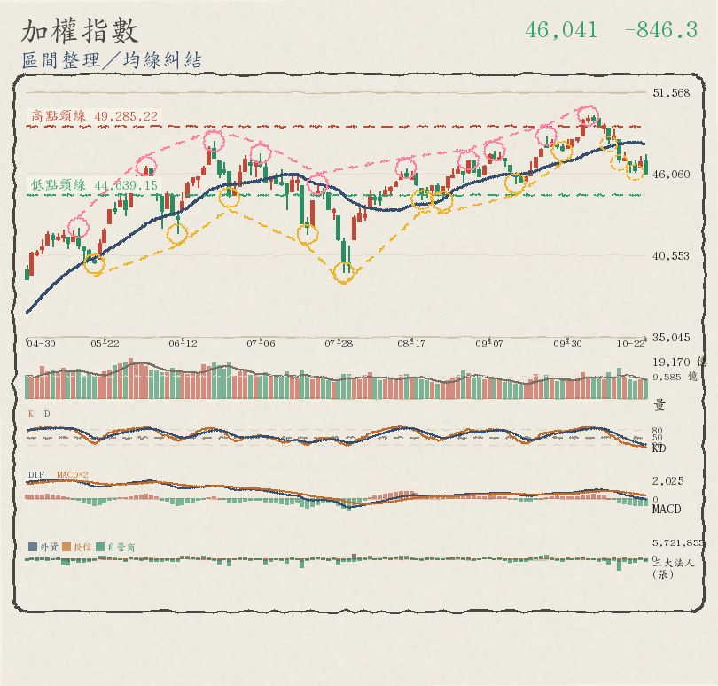
圖說：加權指數日 K（與個股圖相同標記）：黃圈＝轉折低點、粉圈＝轉折高點、虛線小圈＝還沒確認的轉折、藍線＝月線 MA20、水平虛線＝高點／低點頸線。最後一根是資料日當天。
本區塊為公開資料的技術面觀察，不構成投資建議，
不報牌、不預測、不下買賣決策。成交金額為集中市場總成交金額（含 ETF／權證），
與頁首摘要的「上市個股成交金額」口徑不同。標籤是統計，不是評分、也不是推薦。
上市 vs 上櫃（同期快篩）
加權 -1.81% vs 櫃買 -3.47%（同向） → 同向
（兩個市場分開寫，不合併成一個數字；櫃買為 TPEX 公開資料）
櫃買歷史：TPEX 逐日回補 130 根；來源：櫃買中心 www/zh-tw/indexInfo/sectinx（逐日，官方；OpenAPI tpex_index 只回當月）
（TPEX OpenAPI 只回當月，故逐日回補；歷史不足就不算該條均線並標「資料不足」，不用錯數字）
近 20 個交易日大盤狀態回溯（最新在上）（點開看逐日主狀態／量比／量價象限）
用同一支程式回算最近 20 個交易日（主狀態 S1~S8 與量比 20 皆為當日收盤當時的判定，
不是事後調整）；量比 20 未公布的日子寫「—」。
好條件最多的（前 10）
不好條件最多的（前 10）
本期市場狀態：多頭（等權指數在 60 日均線之上）（多頭期間：趨勢類條件（站上月線／月線向上／突破頸線…）有效，回測後 20 日差距最大 +2.09%（t=12.2））
好條件（7 項）：站上月線、月線向上、底底高、頭頭高、突破頸線、外資買超、量價攻擊（收紅＋大量）。
不好條件（5 項）：在月線之下、月線下彎、相對大盤弱、今日下跌、外資賣超。
兩邊都是同一組資料（日線結構＋當日收盤量價籌碼）算出來的「符合項目數」，只是方向相反；
條件數不是評分、也不是推薦，不構成投資建議。
上升趨勢：底底高 ＋ 頭頭高（10 上市 8／上櫃 2）
跌破前低（線型轉弱）（18 上市 13／上櫃 5）
逐檔分析（70 檔）
區間或轉弱 成交金額 663.72 億・全榜第 1 名（上市第 1 名）
好條件 0/7：無
不好條件 4/5：在月線之下、月線下彎、今日下跌、外資賣超
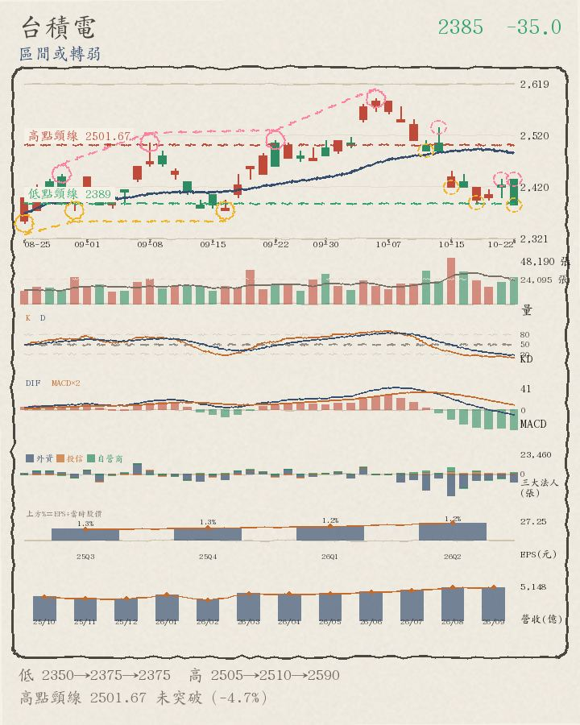
今天帶量收黑、跌破月線 2485.25，離高點頸線 2501.67 還差 4.7%，轉折還沒走出明顯方向。
- 月線位置：收盤 2385 在月線 2485.25 之下；5 日線 2410 也在月線之下（短均在下）；月線走平或向下、5 日線走平或向下
- 量能：成交量是 20 日均量的 1.20 倍，比 20 日均量大不少；收黑卻量增，量價背離
- 關鍵價位：高點頸線 2501.67 還沒突破，差 4.7%；最近轉折高點 2590（低於 7.9%）；最近轉折低點 2375（高於 0.4%）
- 轉折結構：低點 2350、2375、2375 與高點 2505、2510、2590 都沒有明顯遞增，屬於區間震盪或轉弱；還沒確認的轉折低點 10-19 2390、10-22 2385；還沒確認的轉折高點 10-21 2435、10-22 2435（圖上虛線小圈）
剛突破前高 成交金額 319.92 億・全榜第 2 名（上市第 2 名）
好條件 3/7：站上月線、月線向上、頭頭高
不好條件 3/5：相對大盤弱、今日下跌、外資賣超
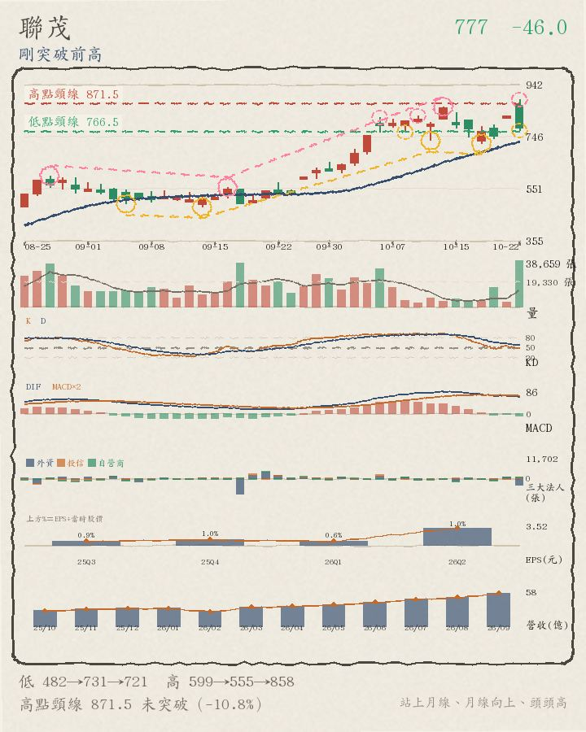
今天帶量收黑、站上月線 726.95，離高點頸線 871.5 還差 10.8%，高點還在墊高（但底部沒同步墊高）。
- 月線位置：收盤 777 在月線 726.95 之上；5 日線 778 也在月線之上（短均在上）；月線向上、5 日線走平或向下
- 量能：成交量是 20 日均量的 2.79 倍，比 20 日均量大不少；收黑卻量增，量價背離
- 關鍵價位：高點頸線 871.5 還沒突破，差 10.8%；最近轉折高點 858（低於 9.4%）；最近轉折低點 721（高於 7.8%）
- 轉折結構：高點 599、555、858 墊高 3.1%（頭頭高），但低點 482、731、721 沒有同步墊高；還沒確認的轉折低點 10-08 763、10-22 770；還沒確認的轉折高點 10-12 825、10-22 885（圖上虛線小圈）
高點墊高、底部不穩 成交金額 311.99 億・全榜第 3 名（上市第 3 名）
好條件 3/7：站上月線、月線向上、頭頭高
不好條件 3/5：相對大盤弱、今日下跌、外資賣超
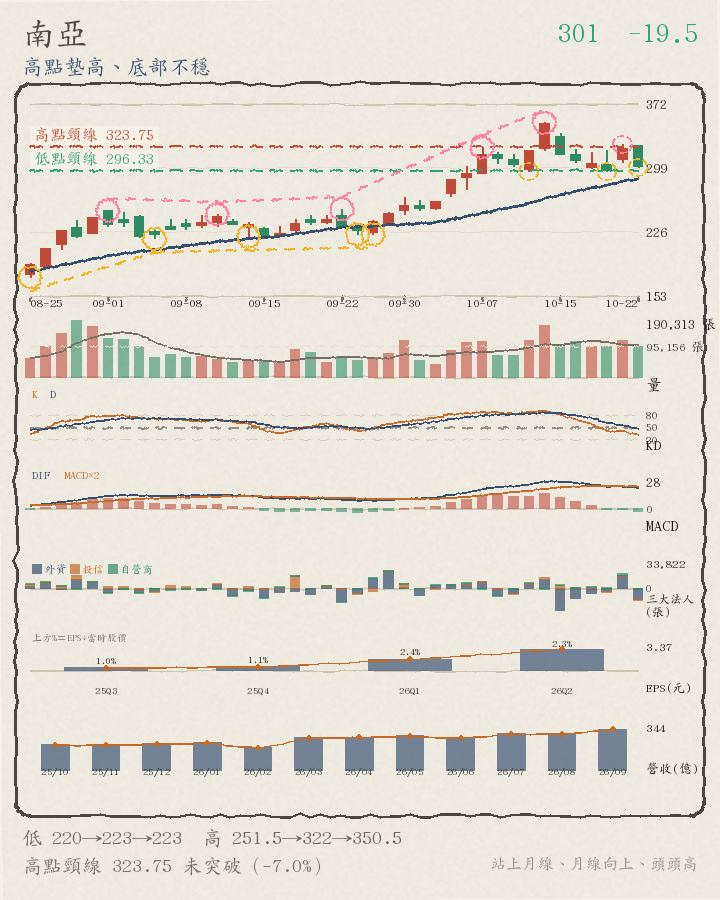
今天帶量收黑、站上月線 286.5，離高點頸線 323.75 還差 7.0%，高點還在墊高（但底部沒同步墊高）。
- 月線位置：收盤 301 在月線 286.5 之上；5 日線 305.6 也在月線之上（短均在上）；月線向上、5 日線走平或向下
- 量能：成交量是 20 日均量的 1.09 倍，比 20 日均量大一些；收黑卻量增，量價背離
- 關鍵價位：高點頸線 323.75 還沒突破，差 7.0%；最近轉折高點 350.5（低於 14.1%）；最近轉折低點 223（高於 35.0%）
- 轉折結構：高點 251.5、322、350.5 墊高 39.4%（頭頭高），但低點 220.5、223、223 沒有同步墊高；還沒確認的轉折低點 10-20 295、10-22 299；還沒確認的轉折高點 10-21 325.5（圖上虛線小圈）
底部墊高、未過前高 成交金額 286.74 億・全榜第 4 名（上市第 4 名）
好條件 1/7：底底高
不好條件 5/5：在月線之下、月線下彎、相對大盤弱、今日下跌、外資賣超
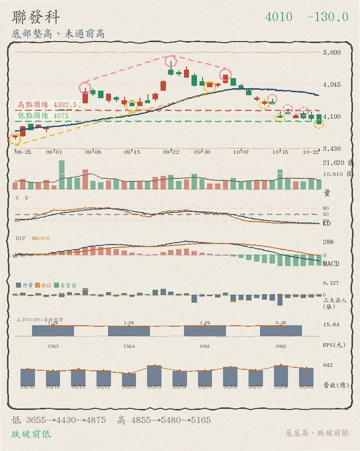
今天收黑、成交量也比平均少、跌破月線 4678.25，跌破前一個轉折低點（高點頸線 4332.5 還在收盤上方），底部還在墊高（但高點沒同步創高）。
- 月線位置：收盤 4010 在月線 4678.25 之下；5 日線 4151 也在月線之下（短均在下）；月線走平或向下、5 日線走平或向下
- 量能：成交量是 20 日均量的 0.94 倍，比 20 日均量少一些
- 關鍵價位：高點頸線 4332.5 還沒突破、還在收盤上方 7.4%；最近轉折高點 5165（低於 22.4%）；最近轉折低點 4875（低於 17.7%）
- 轉折結構：低點 3655、4430、4875 墊高 33.4%（底底高），但高點 4855、5480、5165 沒有同步創高；還沒確認的轉折低點 10-15 4145、10-22 4005；還沒確認的轉折高點 10-16 4360、10-20 4305（圖上虛線小圈）
底部墊高、突破前高 成交金額 270.18 億・全榜第 6 名（上市第 5 名）
好條件 4/7：站上月線、月線向上、底底高、頭頭高
不好條件 3/5：相對大盤弱、今日下跌、外資賣超
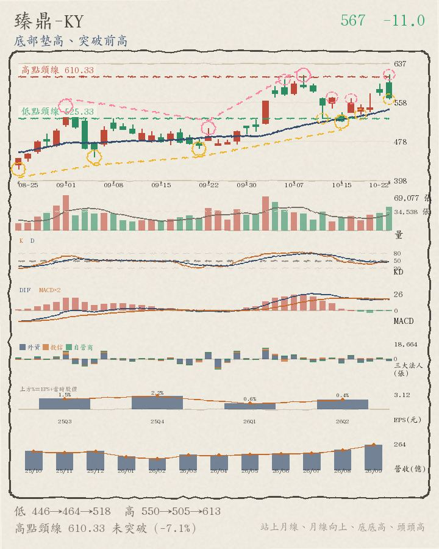
今天帶量收黑、站上月線 543.3，離高點頸線 610.33 還差 7.1%，轉折結構仍是底底高＋頭頭高。
- 月線位置：收盤 567 在月線 543.3 之上；5 日線 559.2 也在月線之上（短均在上）；月線向上、5 日線走平或向下
- 量能：成交量是 20 日均量的 1.39 倍，比 20 日均量大不少；收黑卻量增，量價背離
- 關鍵價位：高點頸線 610.33 還沒突破，差 7.1%；最近轉折高點 613（低於 7.5%）；最近轉折低點 518（高於 9.5%）
- 轉折結構：低點 446.5、463.5、518 一路墊高 16.0%、高點 550、505、613 也一路墊高 0.2%，是底底高＋頭頭高；還沒確認的轉折低點 10-19 533、10-22 564；還沒確認的轉折高點 10-16 565、10-22 614（圖上虛線小圈）
區間或轉弱 成交金額 254.7 億・全榜第 7 名（上市第 6 名）
好條件 3/7：月線向上、外資買超、量價攻擊（收紅＋大量）
不好條件 1/5：在月線之下
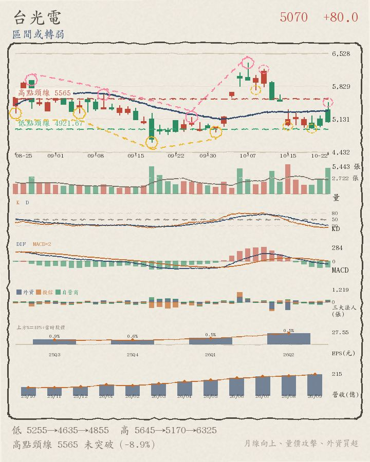
今天帶量收紅、跌破月線 5311，離高點頸線 5565 還差 8.9%，轉折還沒走出明顯方向。
- 月線位置：收盤 5070 在月線 5311 之下；5 日線 5059 也在月線之下（短均在下）；月線向上、5 日線走平或向下
- 量能：成交量是 20 日均量的 2.01 倍，比 20 日均量大不少；收紅又量增，量價配合
- 關鍵價位：高點頸線 5565 還沒突破，差 8.9%；最近轉折高點 6325（低於 19.8%）；最近轉折低點 4855（高於 4.4%）
- 轉折結構：低點 5255、4635、4855 與高點 5645、5170、6325 都沒有明顯遞增，屬於區間震盪或轉弱；還沒確認的轉折低點 10-15 4980、10-20 4930；還沒確認的轉折高點 10-12 6190、10-22 5485（圖上虛線小圈）
區間或轉弱 成交金額 242.21 億・全榜第 8 名（上市第 7 名）
好條件 0/7：無
不好條件 5/5：在月線之下、月線下彎、相對大盤弱、今日下跌、外資賣超
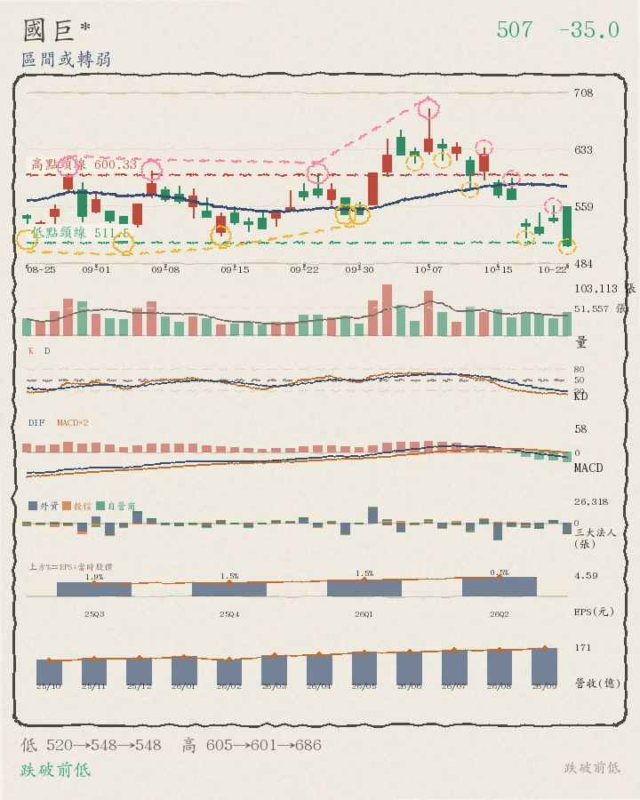
今天收黑、跌破月線 584.45，跌破前一個轉折低點（高點頸線 600.33 還在收盤上方），轉折還沒走出明顯方向。
- 月線位置：收盤 507 在月線 584.45 之下；5 日線 534.6 也在月線之下（短均在下）；月線走平或向下、5 日線走平或向下
- 量能：成交量是 20 日均量的 0.98 倍，跟 20 日均量差不多
- 關鍵價位：高點頸線 600.33 還沒突破、還在收盤上方 15.5%；最近轉折高點 686（低於 26.1%）；最近轉折低點 548（低於 7.5%）
- 轉折結構：低點 520、548、548 與高點 605、601、686 都沒有明顯遞增，屬於區間震盪或轉弱；還沒確認的轉折低點 10-19 517、10-22 506；還沒確認的轉折高點 10-16 595、10-21 559（圖上虛線小圈）
上升趨勢（底底高＋頭頭高） 成交金額 240.14 億・全榜第 9 名（上市第 8 名）
好條件 4/7：月線向上、底底高、頭頭高、外資買超
不好條件 2/5：在月線之下、今日下跌
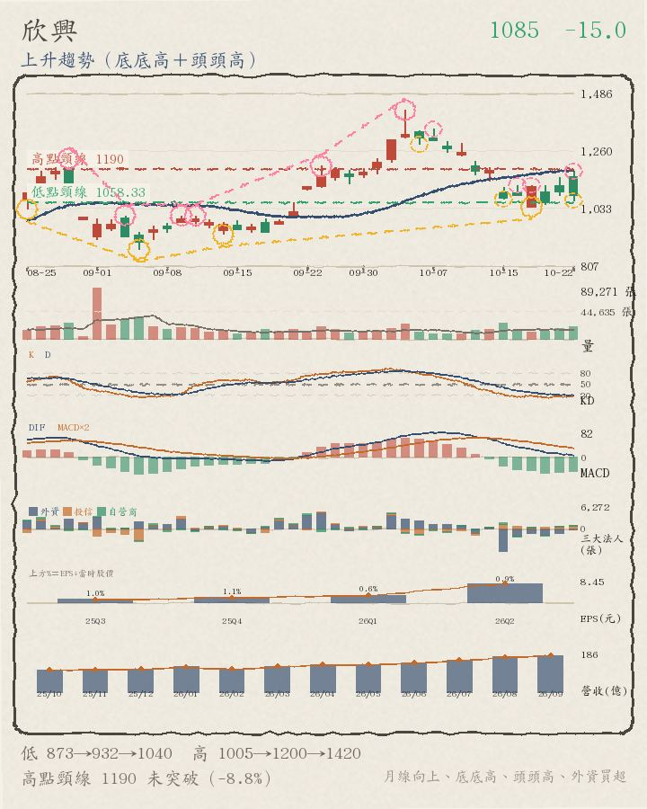
今天帶量收黑、跌破月線 1184，離高點頸線 1190 還差 8.8%，轉折結構仍是底底高＋頭頭高。
- 月線位置：收盤 1085 在月線 1184 之下；5 日線 1090 也在月線之下（短均在下）；月線向上、5 日線走平或向下
- 量能：成交量是 20 日均量的 1.42 倍，比 20 日均量大不少；收黑卻量增，量價背離
- 關鍵價位：高點頸線 1190 還沒突破，差 8.8%；最近轉折高點 1420（低於 23.6%）；最近轉折低點 1040（高於 4.3%）
- 轉折結構：低點 873、932、1040 一路墊高 19.1%、高點 1005、1200、1420 也一路墊高 41.3%，是底底高＋頭頭高；還沒確認的轉折低點 10-15 1070、10-22 1065；還沒確認的轉折高點 10-19 1125、10-22 1180（圖上虛線小圈）
區間或轉弱 成交金額 219.85 億・全榜第 10 名（上市第 9 名）
好條件 1/7：月線向上
不好條件 4/5：在月線之下、相對大盤弱、今日下跌、外資賣超
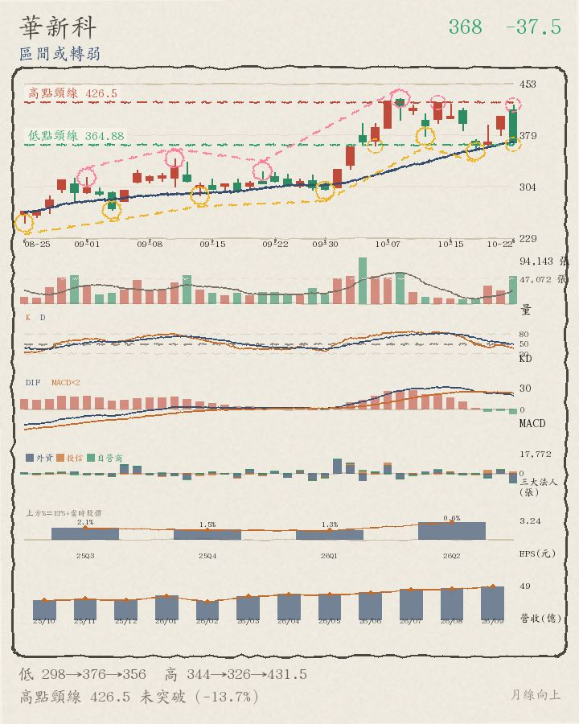
今天帶量收黑、跌破月線 368.475，離高點頸線 426.5 還差 13.7%，轉折還沒走出明顯方向。
- 月線位置：收盤 368 在月線 368.475 之下；5 日線 380.3 也在月線之上（短均在上）；月線向上、5 日線走平或向下
- 量能：成交量是 20 日均量的 1.78 倍，比 20 日均量大不少；收黑卻量增，量價背離
- 關鍵價位：高點頸線 426.5 還沒突破，差 13.7%；最近轉折高點 431.5（低於 14.7%）；最近轉折低點 355.5（高於 3.5%）
- 轉折結構：低點 298.5、376.5、355.5 與高點 344、326、431.5 都沒有明顯遞增，屬於區間震盪或轉弱；還沒確認的轉折低點 10-06 362.5、10-22 365；還沒確認的轉折高點 10-14 426、10-22 422（圖上虛線小圈）
區間或轉弱 成交金額 199.3 億・全榜第 12 名（上市第 10 名）
好條件 2/7：月線向上、外資買超
不好條件 3/5：在月線之下、相對大盤弱、今日下跌
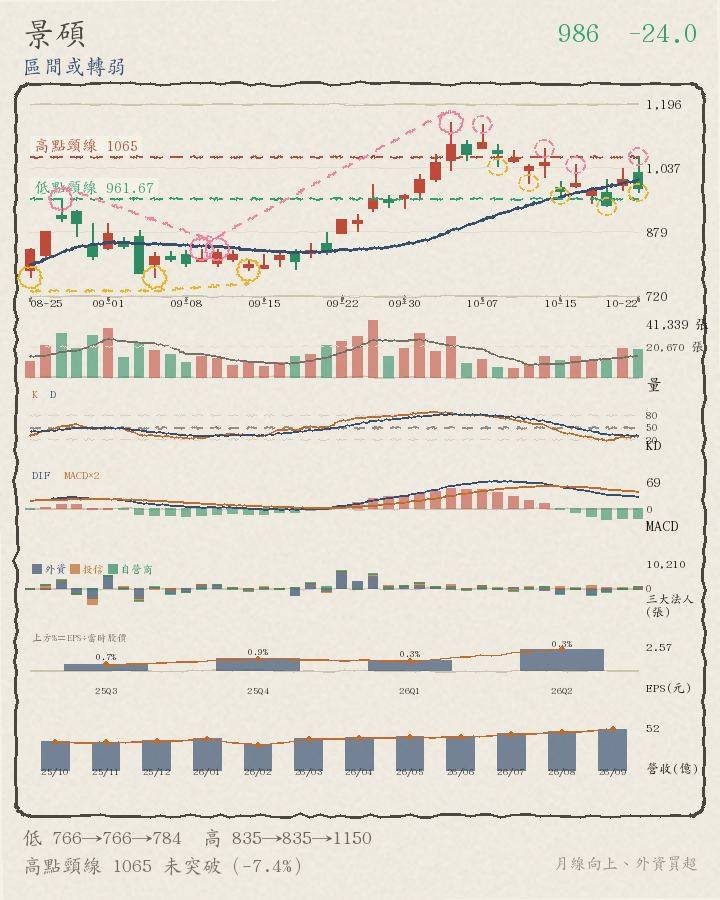
今天帶量收黑、跌破月線 1007.7，離高點頸線 1065 還差 7.4%，轉折還沒走出明顯方向。
- 月線位置：收盤 986 在月線 1007.7 之下；5 日線 984.6 也在月線之下（短均在下）；月線向上、5 日線走平或向下
- 量能：成交量是 20 日均量的 1.07 倍，比 20 日均量大一些；收黑卻量增，量價背離
- 關鍵價位：高點頸線 1065 還沒突破，差 7.4%；最近轉折高點 1150（低於 14.3%）；最近轉折低點 784（高於 25.8%）
- 轉折結構：低點 766、766、784 與高點 835、835、1150 都沒有明顯遞增，屬於區間震盪或轉弱；還沒確認的轉折低點 10-20 941、10-22 976；還沒確認的轉折高點 10-16 1045、10-22 1065（圖上虛線小圈）
剛突破前高 成交金額 187.52 億・全榜第 13 名（上市第 11 名）
好條件 4/7：站上月線、月線向上、頭頭高、外資買超
不好條件 1/5：今日下跌
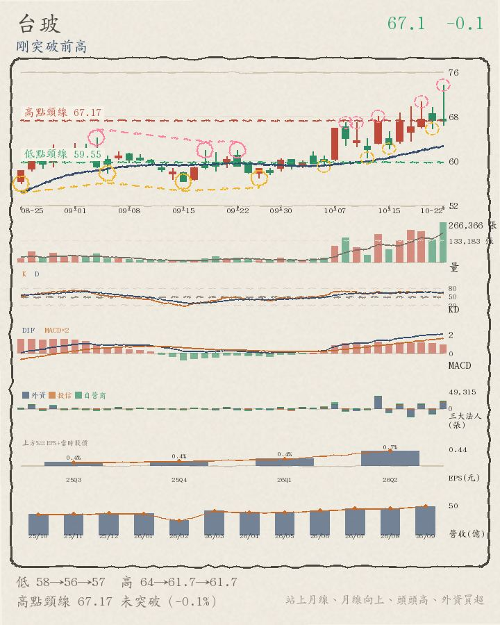
今天帶量收黑、站上月線 62.445，離高點頸線 67.17 還差 0.1%，高點還在墊高（但底部沒同步墊高）。
- 月線位置：收盤 67.1 在月線 62.445 之上；5 日線 66.92 也在月線之上（短均在上）；月線向上、5 日線向上
- 量能：成交量是 20 日均量的 3.42 倍，比 20 日均量大不少；收黑卻量增，量價背離
- 關鍵價位：高點頸線 67.17 還沒突破，差 0.1%；最近轉折高點 61.7（高於 8.8%）；最近轉折低點 56.6（高於 18.6%）
- 轉折結構：高點 64、61.7、61.7 墊高 19.3%（頭頭高），但低點 57.5、56、56.6 沒有同步墊高；還沒確認的轉折低點 10-15 62、10-21 65.6；還沒確認的轉折高點 10-20 70.6、10-22 73.6（圖上虛線小圈）
高點墊高、底部不穩 成交金額 161.19 億・全榜第 14 名（上市第 12 名）
好條件 1/7：頭頭高
不好條件 5/5：在月線之下、月線下彎、相對大盤弱、今日下跌、外資賣超
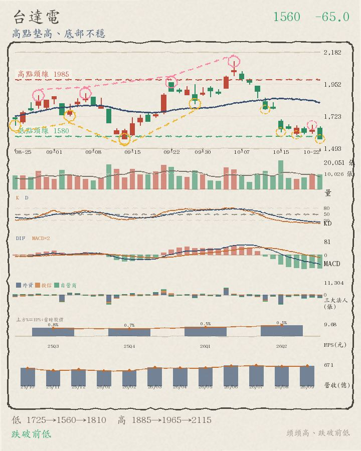
今天收黑、跌破月線 1819.5，跌破前一個轉折低點（高點頸線 1985 還在收盤上方），高點還在墊高（但底部沒同步墊高）。
- 月線位置：收盤 1560 在月線 1819.5 之下；5 日線 1613 也在月線之下（短均在下）；月線走平或向下、5 日線走平或向下
- 量能：成交量是 20 日均量的 0.96 倍，跟 20 日均量差不多
- 關鍵價位：高點頸線 1985 還沒突破、還在收盤上方 21.4%；最近轉折高點 2115（低於 26.2%）；最近轉折低點 1810（低於 13.8%）
- 轉折結構：高點 1885、1965、2115 墊高 12.2%（頭頭高），但低點 1725、1560、1810 沒有同步墊高；還沒確認的轉折低點 10-19 1590、10-22 1560；還沒確認的轉折高點 10-21 1660（圖上虛線小圈）
區間或轉弱 成交金額 137.45 億・全榜第 15 名（上市第 13 名）
好條件 0/7：無
不好條件 5/5：在月線之下、月線下彎、相對大盤弱、今日下跌、外資賣超
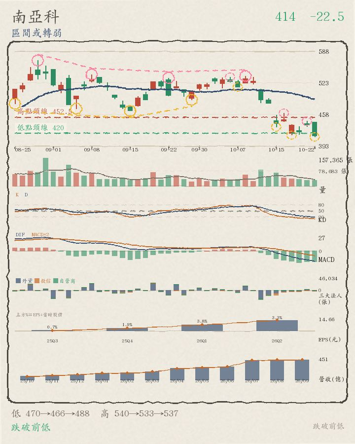
今天收黑、成交量也比平均少、跌破月線 488.85，跌破前一個轉折低點（高點頸線 452.5 還在收盤上方），轉折還沒走出明顯方向。
- 月線位置：收盤 414 在月線 488.85 之下；5 日線 431.2 也在月線之下（短均在下）；月線走平或向下、5 日線走平或向下
- 量能：成交量是 20 日均量的 0.73 倍，比 20 日均量少很多
- 關鍵價位：高點頸線 452.5 還沒突破、還在收盤上方 8.5%；最近轉折高點 537（低於 22.9%）；最近轉折低點 488（低於 15.2%）
- 轉折結構：低點 470、465.5、488 與高點 540、533、537 都沒有明顯遞增，屬於區間震盪或轉弱；還沒確認的轉折低點 10-19 415.5、10-22 412；還沒確認的轉折高點 10-16 461、10-21 444（圖上虛線小圈）
區間或轉弱 成交金額 128.48 億・全榜第 16 名（上市第 14 名）
好條件 3/7：站上月線、月線向上、量價攻擊（收紅＋大量）
不好條件 1/5：外資賣超
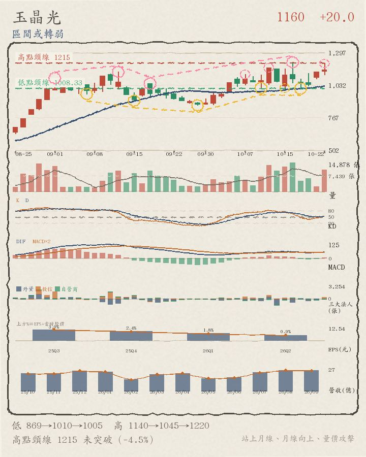
今天帶量收紅、站上月線 1027.6，離高點頸線 1215 還差 4.5%，轉折還沒走出明顯方向。
- 月線位置：收盤 1160 在月線 1027.6 之上；5 日線 1094 也在月線之上（短均在上）；月線向上、5 日線走平或向下
- 量能：成交量是 20 日均量的 1.68 倍，比 20 日均量大不少；收紅又量增，量價配合
- 關鍵價位：高點頸線 1215 還沒突破，差 4.5%；最近轉折高點 1220（低於 4.9%）；最近轉折低點 1005（高於 15.4%）
- 轉折結構：低點 869、1010、1005 與高點 1140、1045、1220 都沒有明顯遞增，屬於區間震盪或轉弱；還沒確認的轉折低點 10-15 1010；還沒確認的轉折高點 10-13 1175、10-22 1210（圖上虛線小圈）
高點墊高、底部不穩 成交金額 120.43 億・全榜第 18 名（上市第 15 名）
好條件 2/7：月線向上、頭頭高
不好條件 4/5：在月線之下、相對大盤弱、今日下跌、外資賣超
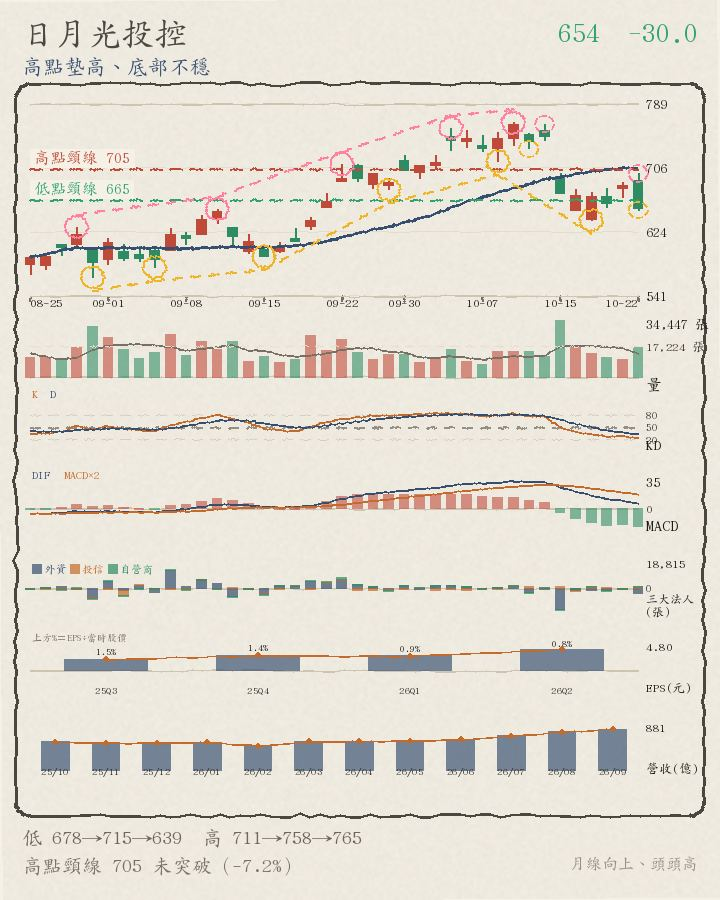
今天帶量收黑、跌破月線 706.05，離高點頸線 705 還差 7.2%，高點還在墊高（但底部沒同步墊高）。
- 月線位置：收盤 654 在月線 706.05 之下；5 日線 667.8 也在月線之下（短均在下）；月線向上、5 日線走平或向下
- 量能：成交量是 20 日均量的 1.23 倍，比 20 日均量大不少；收黑卻量增，量價背離
- 關鍵價位：高點頸線 705 還沒突破，差 7.2%；最近轉折高點 765（低於 14.5%）；最近轉折低點 639（高於 2.3%）
- 轉折結構：高點 711、758、765 墊高 7.6%（頭頭高），但低點 678、715、639 沒有同步墊高；還沒確認的轉折低點 10-13 731、10-22 652；還沒確認的轉折高點 10-14 763、10-22 699（圖上虛線小圈）
高點墊高、底部不穩 成交金額 119.57 億・全榜第 19 名（上市第 16 名）
好條件 3/7：月線向上、頭頭高、外資買超
不好條件 3/5：在月線之下、相對大盤弱、今日下跌
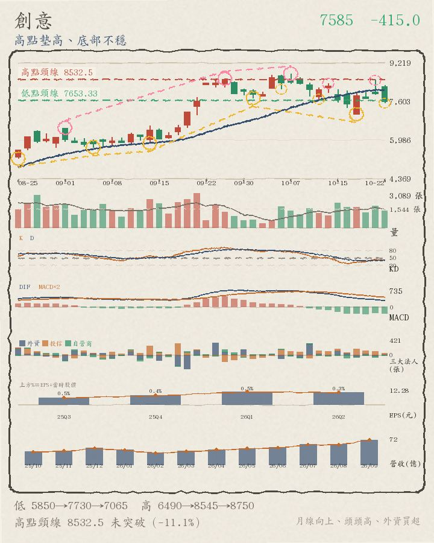
今天帶量收黑、跌破月線 8079.75，離高點頸線 8532.5 還差 11.1%，高點還在墊高（但底部沒同步墊高）。
- 月線位置：收盤 7585 在月線 8079.75 之下；5 日線 7728 也在月線之下（短均在下）；月線向上、5 日線走平或向下
- 量能：成交量是 20 日均量的 1.08 倍，比 20 日均量大一些；收黑卻量增，量價背離
- 關鍵價位：高點頸線 8532.5 還沒突破，差 11.1%；最近轉折高點 8750（低於 13.3%）；最近轉折低點 7065（高於 7.4%）
- 轉折結構：高點 6490、8545、8750 墊高 34.8%（頭頭高），但低點 5850、7730、7065 沒有同步墊高；還沒確認的轉折低點 10-13 7700、10-22 7530；還沒確認的轉折高點 10-14 8345、10-21 8490（圖上虛線小圈）
區間或轉弱 成交金額 113.61 億・全榜第 20 名（上市第 17 名）
好條件 0/7：無
不好條件 3/5：在月線之下、月線下彎、外資賣超
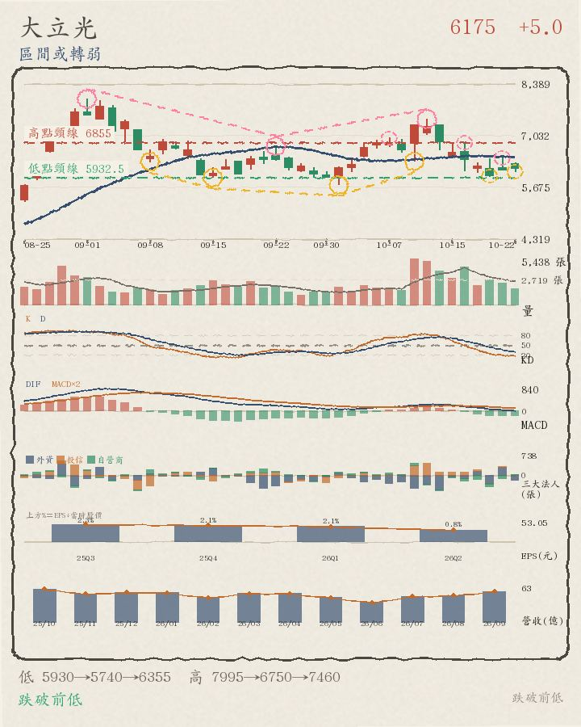
今天收紅、但成交量比平均少、跌破月線 6472，跌破前一個轉折低點（高點頸線 6855 還在收盤上方），轉折還沒走出明顯方向。
- 月線位置：收盤 6175 在月線 6472 之下；5 日線 6193 也在月線之下（短均在下）；月線走平或向下、5 日線走平或向下
- 量能：成交量是 20 日均量的 0.72 倍，比 20 日均量少很多；收紅但量縮，量價背離
- 關鍵價位：高點頸線 6855 還沒突破、還在收盤上方 9.9%；最近轉折高點 7460（低於 17.2%）；最近轉折低點 6355（低於 2.8%）
- 轉折結構：低點 5930、5740、6355 與高點 7995、6750、7460 都沒有明顯遞增，屬於區間震盪或轉弱；還沒確認的轉折低點 10-20 5970、10-22 6090；還沒確認的轉折高點 10-16 6845、10-21 6450（圖上虛線小圈）
底部墊高、未過前高 成交金額 112.78 億・全榜第 21 名（上市第 18 名）
好條件 1/7：底底高
不好條件 5/5：在月線之下、月線下彎、相對大盤弱、今日下跌、外資賣超
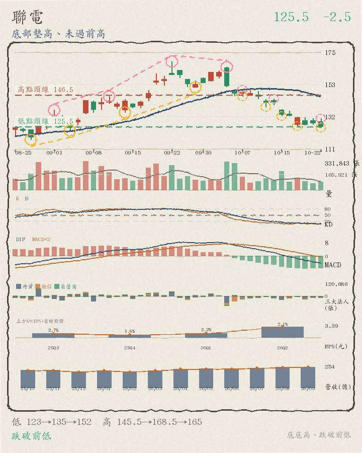
今天收黑、成交量也比平均少、跌破月線 145.425，跌破前一個轉折低點（高點頸線 146.5 還在收盤上方），底部還在墊高（但高點沒同步創高）。
- 月線位置：收盤 125.5 在月線 145.425 之下；5 日線 129 也在月線之下（短均在下）；月線走平或向下、5 日線走平或向下
- 量能：成交量是 20 日均量的 0.60 倍，比 20 日均量少很多
- 關鍵價位：高點頸線 146.5 還沒突破、還在收盤上方 14.3%；最近轉折高點 165（低於 23.9%）；最近轉折低點 151.5（低於 17.2%）
- 轉折結構：低點 123、135、151.5 墊高 23.2%（底底高），但高點 145.5、168.5、165 沒有同步創高；還沒確認的轉折低點 10-19 126、10-22 125；還沒確認的轉折高點 10-14 144、10-22 131（圖上虛線小圈）
區間或轉弱 成交金額 111.53 億・全榜第 22 名（上市第 19 名）
好條件 2/7：月線向上、外資買超
不好條件 3/5：在月線之下、相對大盤弱、今日下跌
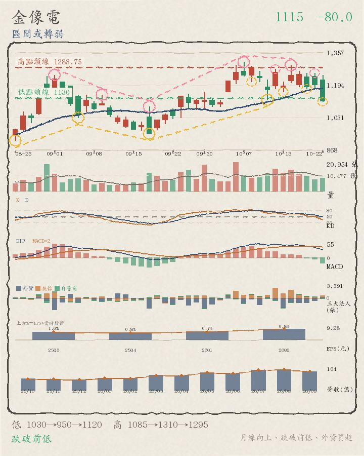
今天收黑、成交量也比平均少、跌破月線 1178.75，跌破前一個轉折低點（高點頸線 1283.75 還在收盤上方），轉折還沒走出明顯方向。
- 月線位置：收盤 1115 在月線 1178.75 之下；5 日線 1198 也在月線之上（短均在上）；月線向上、5 日線走平或向下
- 量能：成交量是 20 日均量的 0.81 倍，比 20 日均量少很多
- 關鍵價位：高點頸線 1283.75 還沒突破、還在收盤上方 13.1%；最近轉折高點 1295（低於 13.9%）；最近轉折低點 1120（低於 0.4%）
- 轉折結構：低點 1030、950、1120 與高點 1085、1310、1295 都沒有明顯遞增，屬於區間震盪或轉弱；還沒確認的轉折低點 10-20 1175、10-22 1110；還沒確認的轉折高點 10-14 1275、10-21 1255（圖上虛線小圈）
區間或轉弱 成交金額 107.62 億・全榜第 23 名（上市第 20 名）
好條件 2/7：月線向上、外資買超
不好條件 3/5：在月線之下、相對大盤弱、今日下跌
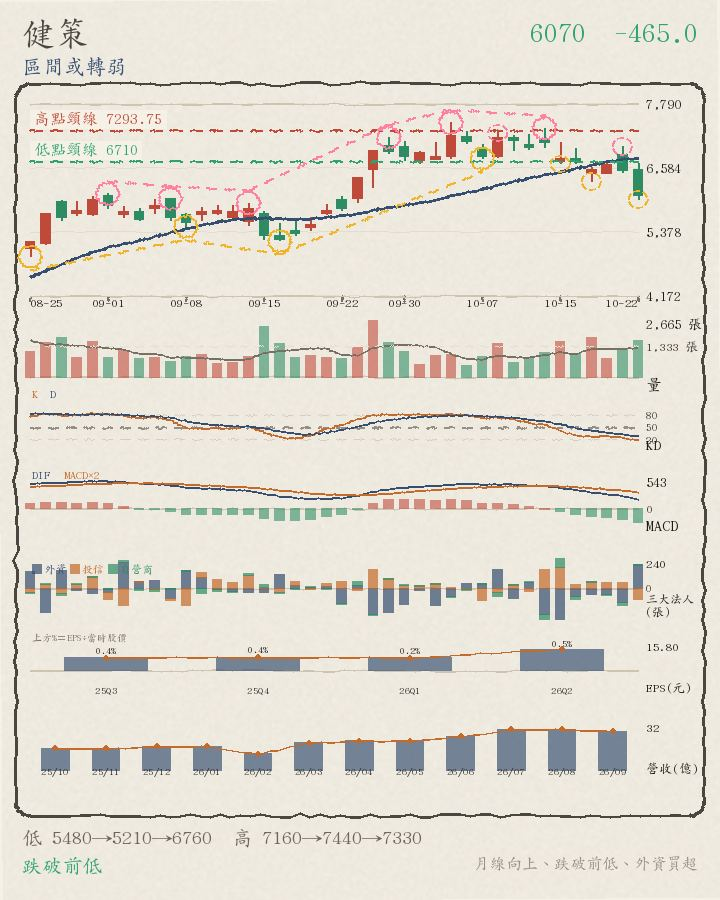
今天帶量收黑、跌破月線 6765.75，跌破前一個轉折低點（高點頸線 7293.75 還在收盤上方），轉折還沒走出明顯方向。
- 月線位置：收盤 6070 在月線 6765.75 之下；5 日線 6509 也在月線之下（短均在下）；月線向上、5 日線走平或向下
- 量能：成交量是 20 日均量的 1.44 倍，比 20 日均量大不少；收黑卻量增，量價背離
- 關鍵價位：高點頸線 7293.75 還沒突破、還在收盤上方 16.8%；最近轉折高點 7330（低於 17.2%）；最近轉折低點 6760（低於 10.2%）
- 轉折結構：低點 5480、5210、6760 與高點 7160、7440、7330 都沒有明顯遞增，屬於區間震盪或轉弱；還沒確認的轉折低點 10-19 6330、10-22 5995；還沒確認的轉折高點 10-08 7245、10-21 6985（圖上虛線小圈）
上升趨勢（底底高＋頭頭高） 成交金額 107.07 億・全榜第 24 名（上市第 21 名）
好條件 3/7：月線向上、底底高、頭頭高
不好條件 4/5：在月線之下、相對大盤弱、今日下跌、外資賣超
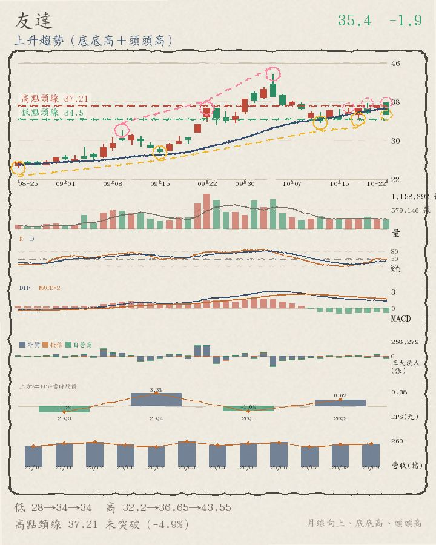
今天收黑、成交量也比平均少、跌破月線 36.54，離高點頸線 37.21 還差 4.9%，轉折結構仍是底底高＋頭頭高。
- 月線位置：收盤 35.4 在月線 36.54 之下；5 日線 36.2 也在月線之下（短均在下）；月線向上、5 日線向上
- 量能：成交量是 20 日均量的 0.54 倍，比 20 日均量少很多
- 關鍵價位：高點頸線 37.21 還沒突破，差 4.9%；最近轉折高點 43.55（低於 18.7%）；最近轉折低點 34.45（高於 2.8%）
- 轉折結構：低點 27.75、33.75、34.45 一路墊高 24.1%、高點 32.2、36.65、43.55 也一路墊高 35.2%，是底底高＋頭頭高；還沒確認的轉折低點 10-22 35.3；還沒確認的轉折高點 10-20 37.65、10-22 37.8（圖上虛線小圈）
底部墊高、未過前高 成交金額 105.87 億・全榜第 25 名（上市第 22 名）
好條件 2/7：月線向上、底底高
不好條件 4/5：在月線之下、相對大盤弱、今日下跌、外資賣超
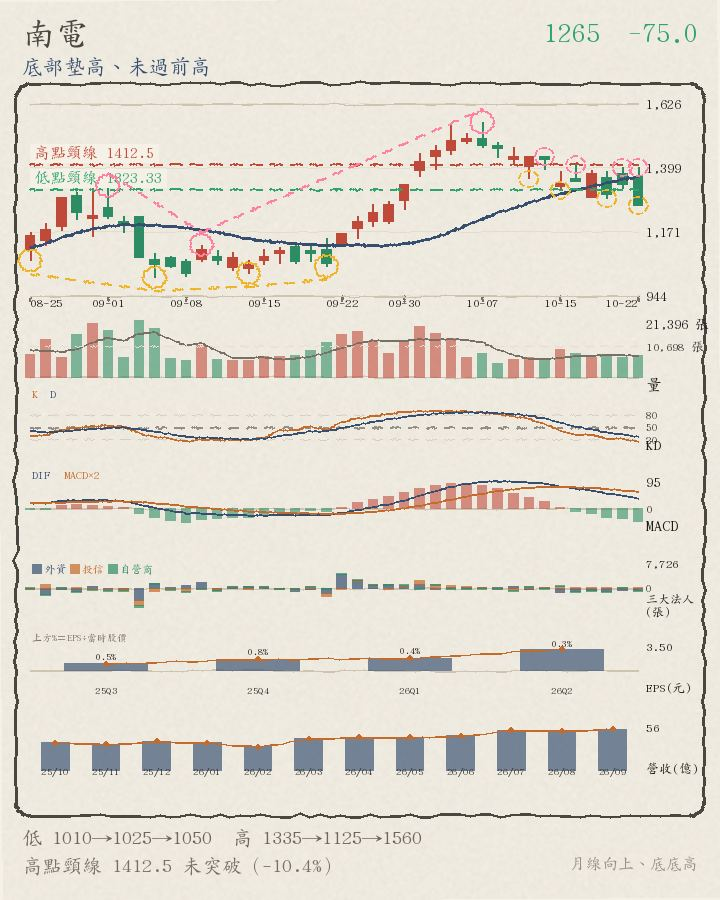
今天收黑、成交量也比平均少、跌破月線 1368，離高點頸線 1412.5 還差 10.4%，底部還在墊高（但高點沒同步創高）。
- 月線位置：收盤 1265 在月線 1368 之下；5 日線 1329 也在月線之下（短均在下）；月線向上、5 日線走平或向下
- 量能：成交量是 20 日均量的 0.74 倍，比 20 日均量少很多
- 關鍵價位：高點頸線 1412.5 還沒突破，差 10.4%；最近轉折高點 1560（低於 18.9%）；最近轉折低點 1050（高於 20.5%）
- 轉折結構：低點 1010、1025、1050 墊高 4.0%（底底高），但高點 1335、1125、1560 沒有同步創高；還沒確認的轉折低點 10-20 1290、10-22 1265；還沒確認的轉折高點 10-21 1400、10-22 1400（圖上虛線小圈）
區間或轉弱 成交金額 98.94 億・全榜第 26 名（上市第 23 名）
好條件 2/7：月線向上、外資買超
不好條件 3/5：在月線之下、相對大盤弱、今日下跌
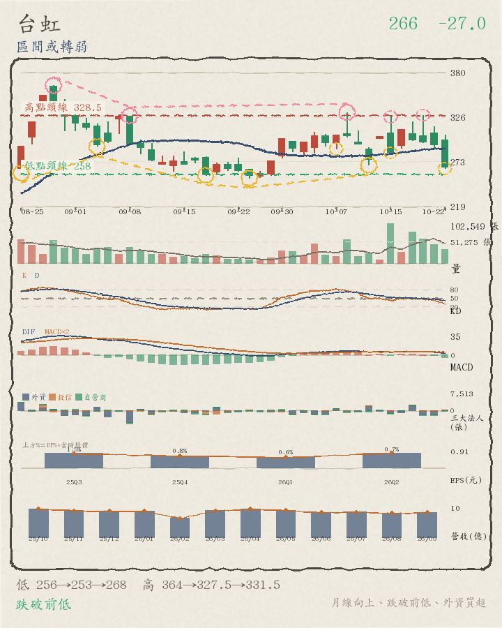
今天帶量收黑、跌破月線 288.4，跌破前一個轉折低點（高點頸線 328.5 還在收盤上方），轉折還沒走出明顯方向。
- 月線位置：收盤 266 在月線 288.4 之下；5 日線 293.1 也在月線之上（短均在上）；月線向上、5 日線向上
- 量能：成交量是 20 日均量的 1.08 倍，比 20 日均量大一些；收黑卻量增，量價背離
- 關鍵價位：高點頸線 328.5 還沒突破、還在收盤上方 19.0%；最近轉折高點 331.5（低於 19.8%）；最近轉折低點 268.5（低於 0.9%）
- 轉折結構：低點 256.5、253、268.5 與高點 364、327.5、331.5 都沒有明顯遞增，屬於區間震盪或轉弱；還沒確認的轉折低點 10-15 283.5、10-22 264.5；還沒確認的轉折高點 10-15 326.5、10-20 328.5（圖上虛線小圈）
高點墊高、底部不穩 成交金額 97.11 億・全榜第 28 名（上市第 24 名）
好條件 2/7：月線向上、頭頭高
不好條件 4/5：在月線之下、相對大盤弱、今日下跌、外資賣超
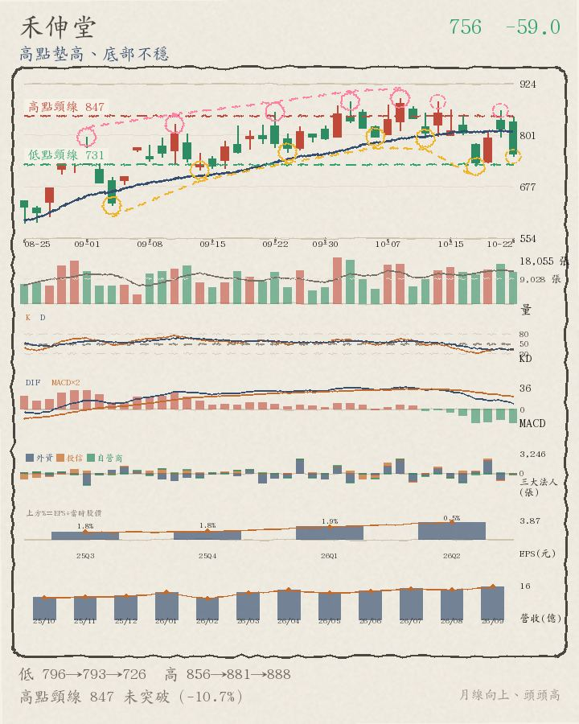
今天帶量收黑、跌破月線 808.9，離高點頸線 847 還差 10.7%，高點還在墊高（但底部沒同步墊高）。
- 月線位置：收盤 756 在月線 808.9 之下；5 日線 781.2 也在月線之下（短均在下）；月線向上、5 日線走平或向下
- 量能：成交量是 20 日均量的 1.08 倍，比 20 日均量大一些；收黑卻量增，量價背離
- 關鍵價位：高點頸線 847 還沒突破，差 10.7%；最近轉折高點 888（低於 14.9%）；最近轉折低點 726（高於 4.1%）
- 轉折結構：高點 856、881、888 墊高 3.7%（頭頭高），但低點 796、793、726 沒有同步墊高；還沒確認的轉折低點 10-22 750；還沒確認的轉折高點 10-14 880、10-21 859（圖上虛線小圈）
底部墊高、突破前高 成交金額 96.32 億・全榜第 29 名（上市第 25 名）
好條件 3/7：月線向上、底底高、頭頭高
不好條件 4/5：在月線之下、相對大盤弱、今日下跌、外資賣超
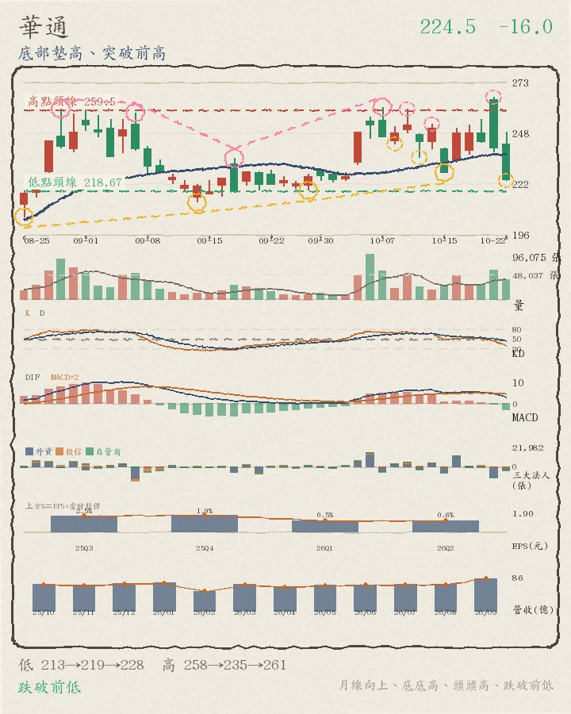
今天帶量收黑、跌破月線 237.225，跌破前一個轉折低點（高點頸線 259.5 還在收盤上方），轉折結構仍是底底高＋頭頭高。
- 月線位置：收盤 224.5 在月線 237.225 之下；5 日線 240.9 也在月線之上（短均在上）；月線向上、5 日線走平或向下
- 量能：成交量是 20 日均量的 1.32 倍，比 20 日均量大不少；收黑卻量增，量價背離
- 關鍵價位：高點頸線 259.5 還沒突破、還在收盤上方 13.5%；最近轉折高點 261（低於 14.0%）；最近轉折低點 228（低於 1.5%）
- 轉折結構：低點 213、219、228 一路墊高 7.0%、高點 258、235、261 也一路墊高 1.9%，是底底高＋頭頭高；還沒確認的轉折低點 10-13 235.5、10-22 224；還沒確認的轉折高點 10-14 252.5、10-21 266（圖上虛線小圈）
高點墊高、底部不穩 成交金額 94.09 億・全榜第 30 名（上市第 26 名）
好條件 2/7：月線向上、頭頭高
不好條件 4/5：在月線之下、相對大盤弱、今日下跌、外資賣超
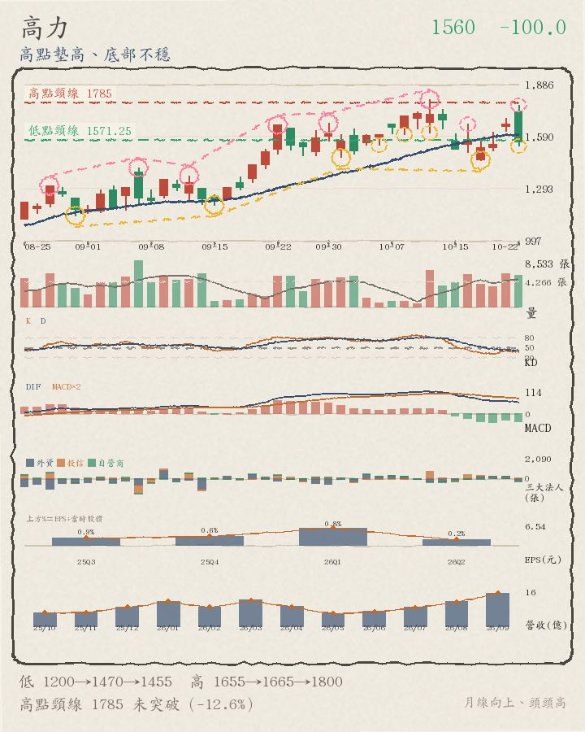
今天帶量收黑、跌破月線 1602，離高點頸線 1785 還差 12.6%，高點還在墊高（但底部沒同步墊高）。
- 月線位置：收盤 1560 在月線 1602 之下；5 日線 1572 也在月線之下（短均在下）；月線向上、5 日線走平或向下
- 量能：成交量是 20 日均量的 1.50 倍，比 20 日均量大不少；收黑卻量增，量價背離
- 關鍵價位：高點頸線 1785 還沒突破，差 12.6%；最近轉折高點 1800（低於 13.3%）；最近轉折低點 1455（高於 7.2%）
- 轉折結構：高點 1655、1665、1800 墊高 8.8%（頭頭高），但低點 1200、1470、1455 沒有同步墊高；還沒確認的轉折低點 10-13 1610、10-22 1535；還沒確認的轉折高點 10-16 1660、10-22 1770（圖上虛線小圈）
區間或轉弱 成交金額 91.46 億・全榜第 31 名（上市第 27 名）
好條件 0/7：無
不好條件 5/5：在月線之下、月線下彎、相對大盤弱、今日下跌、外資賣超
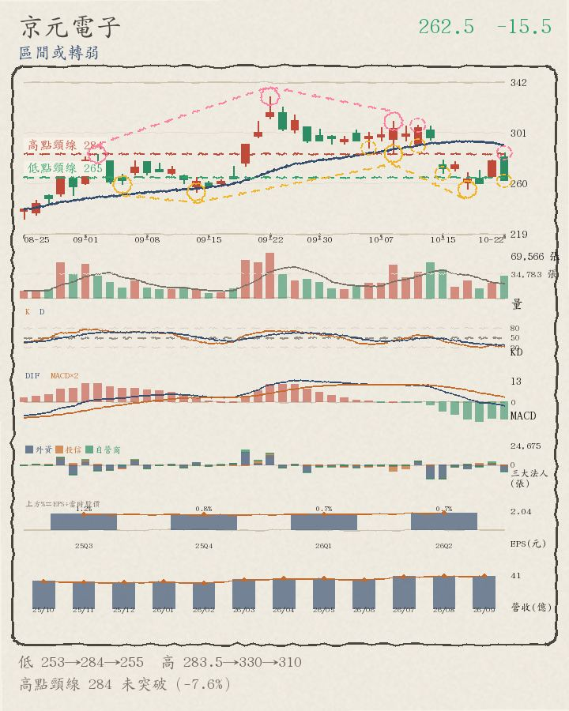
今天帶量收黑、跌破月線 291.025，離高點頸線 284 還差 7.6%，轉折還沒走出明顯方向。
- 月線位置：收盤 262.5 在月線 291.025 之下；5 日線 267.7 也在月線之下（短均在下）；月線走平或向下、5 日線走平或向下
- 量能：成交量是 20 日均量的 1.07 倍，比 20 日均量大一些；收黑卻量增，量價背離
- 關鍵價位：高點頸線 284 還沒突破，差 7.6%；最近轉折高點 310（低於 15.3%）；最近轉折低點 255（高於 2.9%）
- 轉折結構：低點 253、284、255 與高點 283.5、330、310 都沒有明顯遞增，屬於區間震盪或轉弱；還沒確認的轉折低點 10-15 268、10-22 262；還沒確認的轉折高點 10-13 307、10-22 284.5（圖上虛線小圈）
區間或轉弱 成交金額 88.63 億・全榜第 32 名（上市第 28 名）
好條件 1/7：外資買超
不好條件 4/5：在月線之下、月線下彎、相對大盤弱、今日下跌
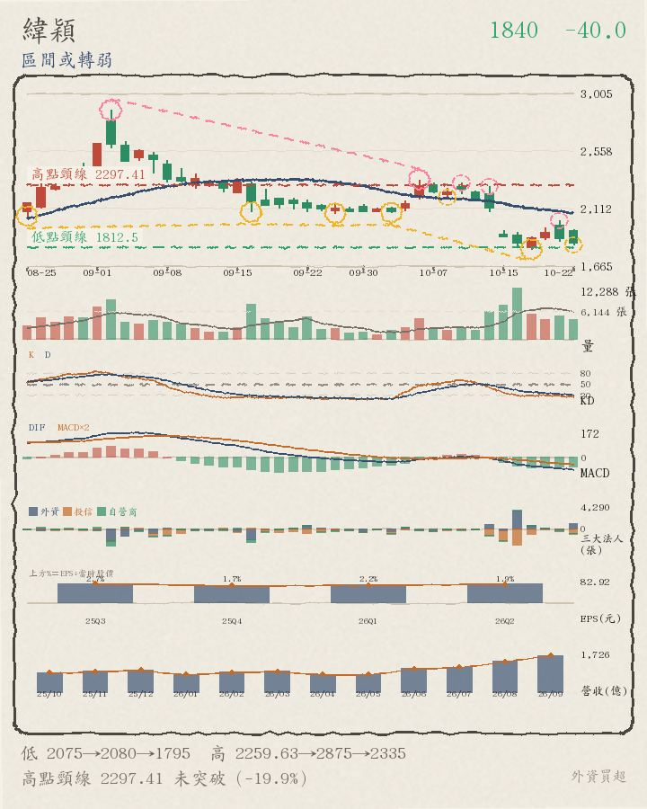
今天帶量收黑、跌破月線 2075.25，離高點頸線 2297.41 還差 19.9%，轉折還沒走出明顯方向。
- 月線位置：收盤 1840 在月線 2075.25 之下；5 日線 1875 也在月線之下（短均在下）；月線走平或向下、5 日線走平或向下
- 量能：成交量是 20 日均量的 1.20 倍，比 20 日均量大不少；收黑卻量增，量價背離
- 關鍵價位：高點頸線 2297.41 還沒突破，差 19.9%；最近轉折高點 2335（低於 21.2%）；最近轉折低點 1795（高於 2.5%）
- 轉折結構：低點 2075、2080、1795 與高點 2259.63、2875、2335 都沒有明顯遞增，屬於區間震盪或轉弱；還沒確認的轉折低點 10-08 2200、10-22 1830；還沒確認的轉折高點 10-14 2285、10-21 2020（圖上虛線小圈）
騰輝電子-KY 6672 上市
581 -46.0
上升趨勢（底底高＋頭頭高） 成交金額 84.51 億・全榜第 33 名（上市第 29 名）
好條件 4/7：站上月線、月線向上、底底高、頭頭高
不好條件 3/5：相對大盤弱、今日下跌、外資賣超
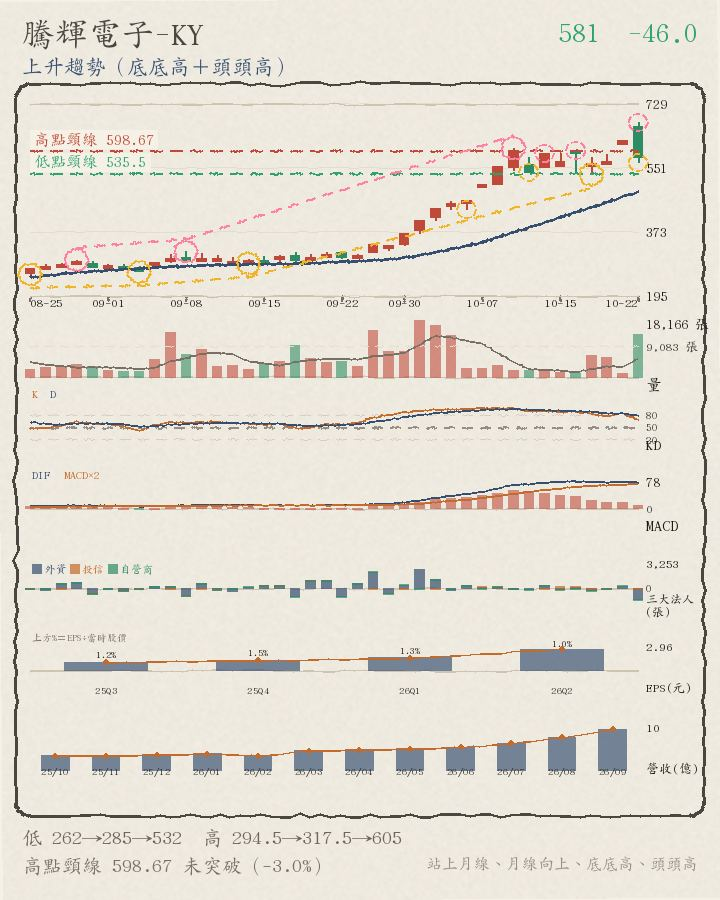
今天帶量收黑、站上月線 484.8，離高點頸線 598.67 還差 3.0%，轉折結構仍是底底高＋頭頭高。
- 月線位置：收盤 581 在月線 484.8 之上；5 日線 586.2 也在月線之上（短均在上）；月線向上、5 日線向上
- 量能：成交量是 20 日均量的 2.21 倍，比 20 日均量大不少；收黑卻量增，量價背離
- 關鍵價位：高點頸線 598.67 還沒突破，差 3.0%；最近轉折高點 605（低於 4.0%）；最近轉折低點 532（高於 9.2%）
- 轉折結構：低點 261.5、285、532 一路墊高 103.4%、高點 294.5、317.5、605 也一路墊高 105.4%，是底底高＋頭頭高；還沒確認的轉折低點 10-13 539、10-22 565；還沒確認的轉折高點 10-16 599、10-22 677（圖上虛線小圈）
區間或轉弱 成交金額 82.32 億・全榜第 35 名（上市第 30 名）
好條件 2/7：月線向上、外資買超
不好條件 3/5：在月線之下、相對大盤弱、今日下跌
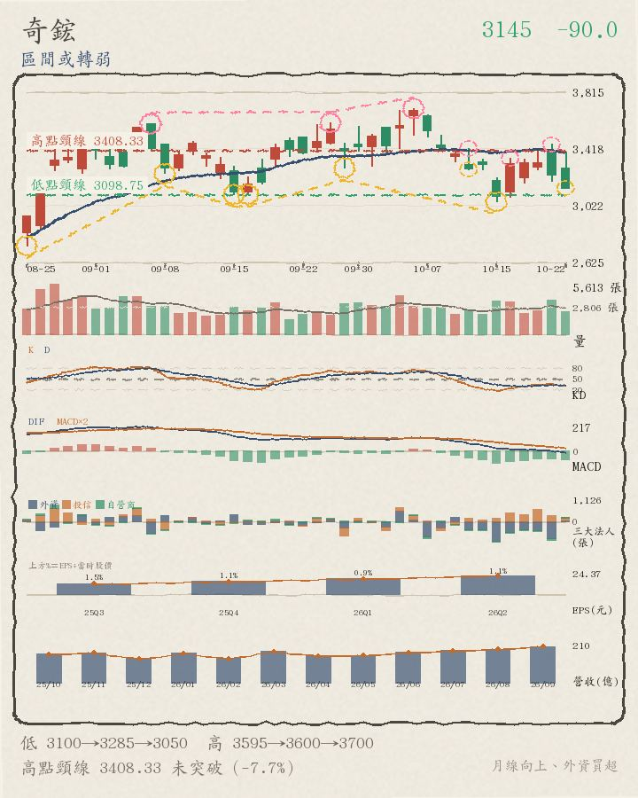
今天收黑、成交量也比平均少、跌破月線 3393，離高點頸線 3408.33 還差 7.7%，轉折還沒走出明顯方向。
- 月線位置：收盤 3145 在月線 3393 之下；5 日線 3268 也在月線之下（短均在下）；月線向上、5 日線走平或向下
- 量能：成交量是 20 日均量的 0.87 倍，比 20 日均量少一些
- 關鍵價位：高點頸線 3408.33 還沒突破，差 7.7%；最近轉折高點 3700（低於 15.0%）；最近轉折低點 3050（高於 3.1%）
- 轉折結構：低點 3100、3285、3050 與高點 3595、3600、3700 都沒有明顯遞增，屬於區間震盪或轉弱；還沒確認的轉折低點 10-13 3275、10-22 3145；還沒確認的轉折高點 10-16 3355、10-21 3450（圖上虛線小圈）
區間或轉弱 成交金額 76.73 億・全榜第 37 名（上市第 31 名）
好條件 2/7：外資買超、量價攻擊（收紅＋大量）
不好條件 2/5：在月線之下、月線下彎
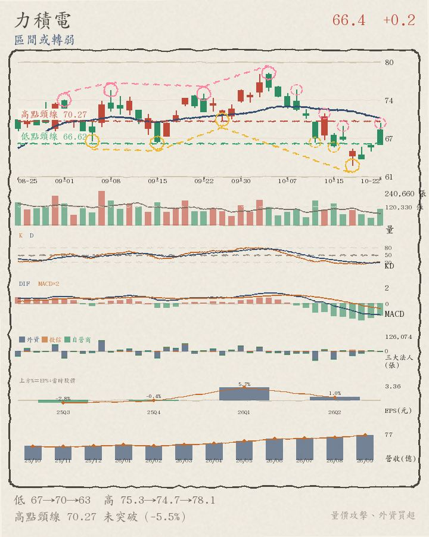
今天帶量收紅、跌破月線 70.79，離高點頸線 70.27 還差 5.5%，轉折還沒走出明顯方向。
- 月線位置：收盤 66.4 在月線 70.79 之下；5 日線 65.86 也在月線之下（短均在下）；月線走平或向下、5 日線走平或向下
- 量能：成交量是 20 日均量的 1.10 倍，比 20 日均量大一些；收紅又量增，量價配合
- 關鍵價位：高點頸線 70.27 還沒突破，差 5.5%；最近轉折高點 78.1（低於 15.0%）；最近轉折低點 63（高於 5.4%）
- 轉折結構：低點 66.7、70.5、63 與高點 75.3、74.7、78.1 都沒有明顯遞增，屬於區間震盪或轉弱；還沒確認的轉折低點 10-13 66.8、10-15 66；還沒確認的轉折高點 10-16 69.4、10-22 69.9（圖上虛線小圈）
上升趨勢（底底高＋頭頭高） 成交金額 75.18 億・全榜第 39 名（上市第 32 名）
好條件 5/7：站上月線、月線向上、底底高、頭頭高、外資買超
不好條件 2/5：相對大盤弱、今日下跌
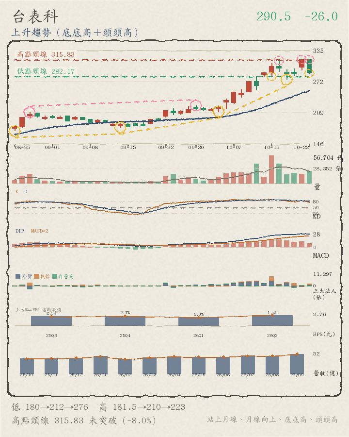
今天帶量收黑、站上月線 253.35，離高點頸線 315.83 還差 8.0%，轉折結構仍是底底高＋頭頭高。
- 月線位置：收盤 290.5 在月線 253.35 之上；5 日線 296.6 也在月線之上（短均在上）；月線向上、5 日線向上
- 量能：成交量是 20 日均量的 1.35 倍，比 20 日均量大不少；收黑卻量增，量價背離
- 關鍵價位：高點頸線 315.83 還沒突破，差 8.0%；最近轉折高點 223（高於 30.3%）；最近轉折低點 276（高於 5.3%）
- 轉折結構：低點 179.5、211.5、276 一路墊高 53.8%、高點 181.5、210、223 也一路墊高 22.9%，是底底高＋頭頭高；還沒確認的轉折低點 10-15 282、10-22 288.5；還沒確認的轉折高點 10-21 316.5、10-22 316.5（圖上虛線小圈）
高點墊高、底部不穩 成交金額 71.87 億・全榜第 40 名（上市第 33 名）
好條件 5/7：站上月線、月線向上、頭頭高、外資買超、量價攻擊（收紅＋大量）
不好條件 0/5：無
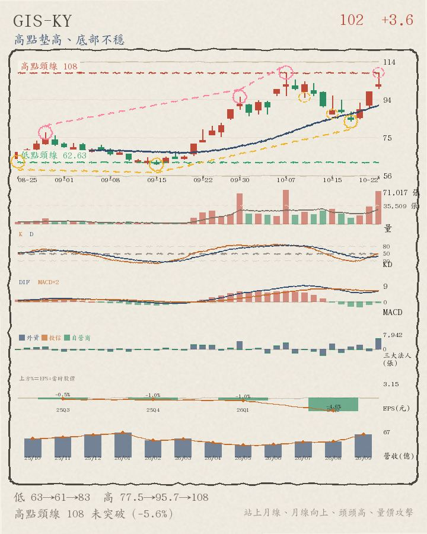
今天帶量收紅、站上月線 91.48，離高點頸線 108 還差 5.6%，高點還在墊高（但底部沒同步墊高）。
- 月線位置：收盤 102 在月線 91.48 之上；5 日線 92.48 也在月線之上（短均在上）；月線向上、5 日線走平或向下
- 量能：成交量是 20 日均量的 2.69 倍，比 20 日均量大不少；收紅又量增，量價配合
- 關鍵價位：高點頸線 108 還沒突破，差 5.6%；最近轉折高點 108（低於 5.6%）；最近轉折低點 83.3（高於 22.4%）
- 轉折結構：高點 77.5、95.7、108 墊高 39.4%（頭頭高），但低點 62.9、61.4、83.3 沒有同步墊高；還沒確認的轉折低點 10-12 95.5、10-15 87.1；還沒確認的轉折高點 10-22 108（圖上虛線小圈）
剛突破前高 成交金額 70.73 億・全榜第 41 名（上市第 34 名）
好條件 4/7：站上月線、月線向上、頭頭高、外資買超
不好條件 2/5：相對大盤弱、今日下跌
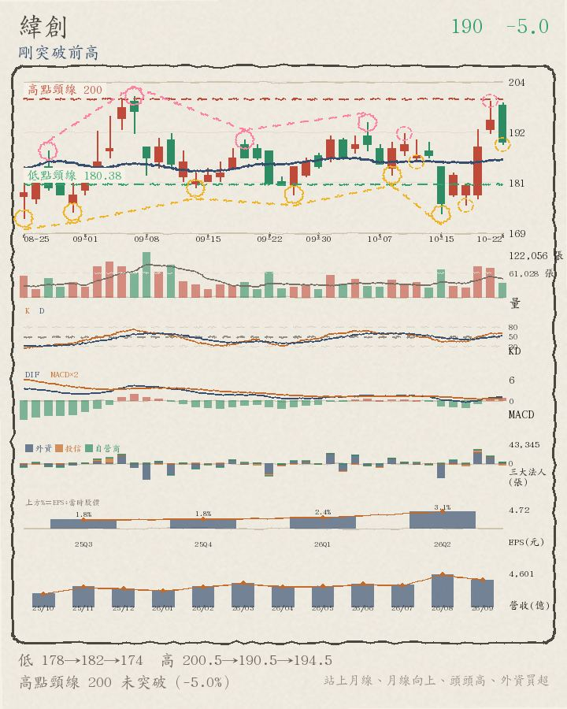
今天收黑、成交量也比平均少、站上月線 186.025，離高點頸線 200 還差 5.0%，高點還在墊高（但底部沒同步墊高）。
- 月線位置：收盤 190 在月線 186.025 之上；5 日線 187.3 也在月線之上（短均在上）；月線向上、5 日線向上
- 量能：成交量是 20 日均量的 0.90 倍，比 20 日均量少一些
- 關鍵價位：高點頸線 200 還沒突破，差 5.0%；最近轉折高點 194.5（低於 2.3%）；最近轉折低點 173.5（高於 9.5%）
- 轉折結構：高點 200.5、190.5、194.5 墊高 2.6%（頭頭高），但低點 178、182.5、173.5 沒有同步墊高；還沒確認的轉折低點 10-19 175.5、10-22 189.5；還沒確認的轉折高點 10-12 192、10-21 199.5（圖上虛線小圈）
剛突破前高 成交金額 70.71 億・全榜第 42 名（上市第 35 名）
好條件 3/7：站上月線、月線向上、頭頭高
不好條件 3/5：相對大盤弱、今日下跌、外資賣超
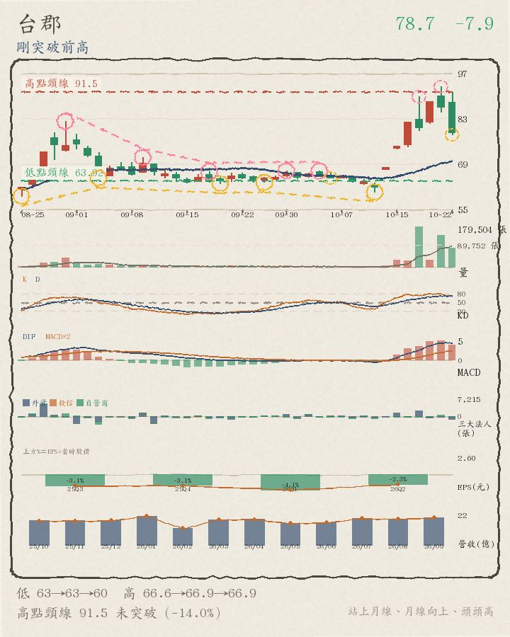
今天帶量收黑、站上月線 69.895，離高點頸線 91.5 還差 14.0%，高點還在墊高（但底部沒同步墊高）。
- 月線位置：收盤 78.7 在月線 69.895 之上；5 日線 83.18 也在月線之上（短均在上）；月線向上、5 日線向上
- 量能：成交量是 20 日均量的 3.74 倍，比 20 日均量大不少；收黑卻量增，量價背離
- 關鍵價位：高點頸線 91.5 還沒突破，差 14.0%；最近轉折高點 66.9（高於 17.6%）；最近轉折低點 60.3（高於 30.5%）
- 轉折結構：高點 66.6、66.9、66.9 墊高 39.0%（頭頭高），但低點 63、63.3、60.3 沒有同步墊高；還沒確認的轉折低點 10-06 64.7、10-22 78.1；還沒確認的轉折高點 10-19 90、10-21 93（圖上虛線小圈）
區間或轉弱 成交金額 68.53 億・全榜第 44 名（上市第 36 名）
好條件 0/7：無
不好條件 5/5：在月線之下、月線下彎、相對大盤弱、今日下跌、外資賣超
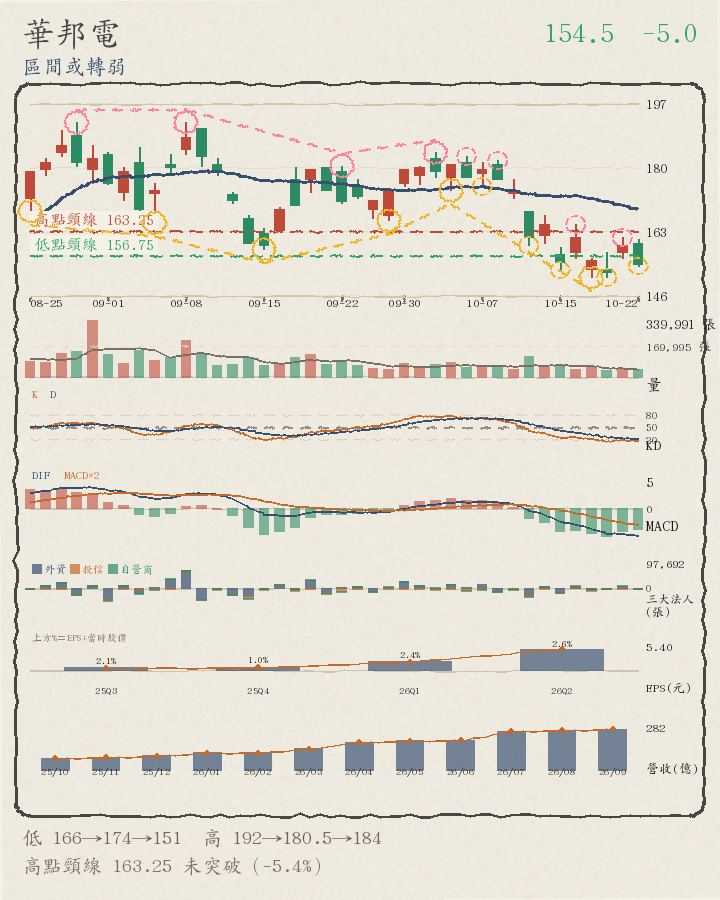
今天收黑、成交量也比平均少、跌破月線 169.075，離高點頸線 163.25 還差 5.4%，轉折還沒走出明顯方向。
- 月線位置：收盤 154.5 在月線 169.075 之下；5 日線 156.7 也在月線之下（短均在下）；月線走平或向下、5 日線走平或向下
- 量能：成交量是 20 日均量的 0.65 倍，比 20 日均量少很多
- 關鍵價位：高點頸線 163.25 還沒突破，差 5.4%；最近轉折高點 184（低於 16.0%）；最近轉折低點 151（高於 2.3%）
- 轉折結構：低點 166、174、151 與高點 192、180.5、184 都沒有明顯遞增，屬於區間震盪或轉弱；還沒確認的轉折低點 10-20 151、10-22 154；還沒確認的轉折高點 10-16 165、10-21 161.5（圖上虛線小圈）
底部墊高、未過前高 成交金額 65.93 億・全榜第 46 名（上市第 37 名）
好條件 2/7：底底高、外資買超
不好條件 4/5：在月線之下、月線下彎、相對大盤弱、今日下跌
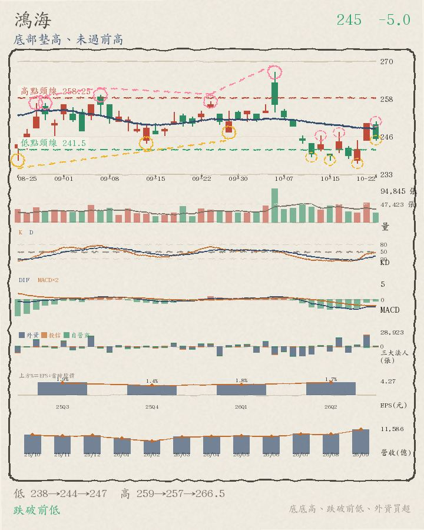
今天收黑、成交量也比平均少、跌破月線 248.225，跌破前一個轉折低點（高點頸線 258.25 還在收盤上方），底部還在墊高（但高點沒同步創高）。
- 月線位置：收盤 245 在月線 248.225 之下；5 日線 244 也在月線之下（短均在下）；月線走平或向下、5 日線向上
- 量能：成交量是 20 日均量的 0.68 倍，比 20 日均量少很多
- 關鍵價位：高點頸線 258.25 還沒突破、還在收盤上方 5.1%；最近轉折高點 266.5（低於 8.1%）；最近轉折低點 247（低於 0.8%）
- 轉折結構：低點 238、243.5、247 墊高 3.8%（底底高），但高點 259、257、266.5 沒有同步創高；還沒確認的轉折低點 10-20 237、10-22 244.5；還沒確認的轉折高點 10-16 247、10-22 250.5（圖上虛線小圈）
區間或轉弱 成交金額 63.14 億・全榜第 47 名（上市第 38 名）
好條件 1/7：月線向上
不好條件 4/5：在月線之下、相對大盤弱、今日下跌、外資賣超
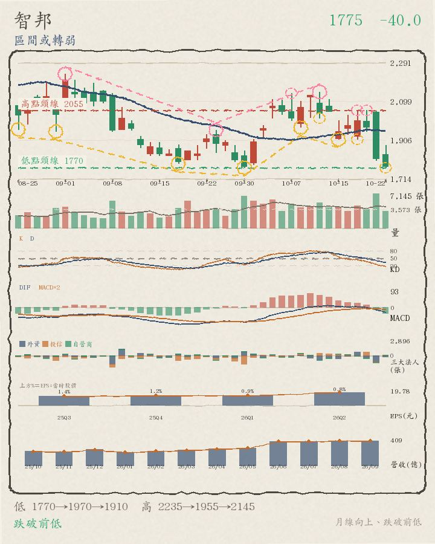
今天收黑、成交量也比平均少、跌破月線 1953.75，跌破前一個轉折低點（高點頸線 2055 還在收盤上方），轉折還沒走出明顯方向。
- 月線位置：收盤 1775 在月線 1953.75 之下；5 日線 1909 也在月線之下（短均在下）；月線向上、5 日線走平或向下
- 量能：成交量是 20 日均量的 0.78 倍，比 20 日均量少很多
- 關鍵價位：高點頸線 2055 還沒突破、還在收盤上方 13.6%；最近轉折高點 2145（低於 17.2%）；最近轉折低點 1910（低於 7.1%）
- 轉折結構：低點 1770、1970、1910 與高點 2235、1955、2145 都沒有明顯遞增，屬於區間震盪或轉弱；還沒確認的轉折低點 10-19 1910、10-22 1770；還沒確認的轉折高點 10-19 2055、10-20 2055（圖上虛線小圈）
高點墊高、底部不穩 成交金額 59.57 億・全榜第 48 名（上市第 39 名）
好條件 2/7：頭頭高、外資買超
不好條件 4/5：在月線之下、月線下彎、相對大盤弱、今日下跌
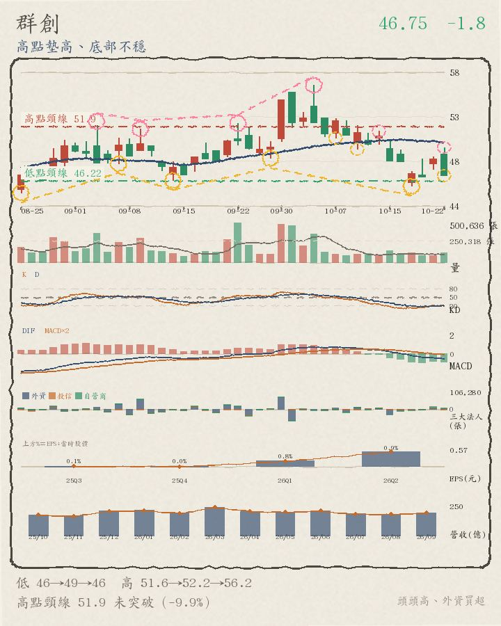
今天收黑、成交量也比平均少、跌破月線 50.192，離高點頸線 51.9 還差 9.9%，高點還在墊高（但底部沒同步墊高）。
- 月線位置：收盤 46.75 在月線 50.192 之下；5 日線 47.45 也在月線之下（短均在下）；月線走平或向下、5 日線走平或向下
- 量能：成交量是 20 日均量的 0.64 倍，比 20 日均量少很多
- 關鍵價位：高點頸線 51.9 還沒突破，差 9.9%；最近轉折高點 56.2（低於 16.8%）；最近轉折低點 45.65（高於 2.4%）
- 轉折結構：高點 51.6、52.2、56.2 墊高 8.9%（頭頭高），但低點 46.25、48.55、45.65 沒有同步墊高；還沒確認的轉折低點 10-12 49.5、10-22 46.75；還沒確認的轉折高點 10-14 51.4、10-22 49.7（圖上虛線小圈）
世芯-KY 3661 上市
3495 -215.0
區間或轉弱 成交金額 55.19 億・全榜第 50 名（上市第 40 名）
好條件 1/7：月線向上
不好條件 4/5：在月線之下、相對大盤弱、今日下跌、外資賣超
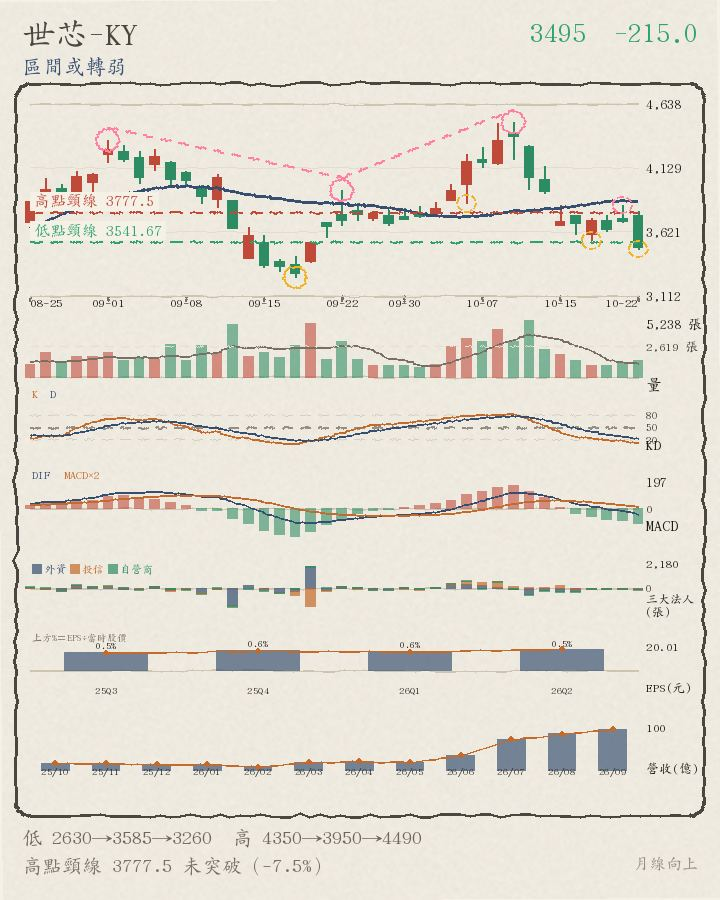
今天收黑、成交量也比平均少、跌破月線 3862.5，離高點頸線 3777.5 還差 7.5%，轉折還沒走出明顯方向。
- 月線位置：收盤 3495 在月線 3862.5 之下；5 日線 3649 也在月線之下（短均在下）；月線向上、5 日線走平或向下
- 量能：成交量是 20 日均量的 0.70 倍，比 20 日均量少很多
- 關鍵價位：高點頸線 3777.5 還沒突破，差 7.5%；最近轉折高點 4490（低於 22.2%）；最近轉折低點 3260（高於 7.2%）
- 轉折結構：低點 2630、3585、3260 與高點 4350、3950、4490 都沒有明顯遞增，屬於區間震盪或轉弱；還沒確認的轉折低點 10-19 3555、10-22 3485；還沒確認的轉折高點 10-21 3835（圖上虛線小圈）
區間或轉弱 成交金額 45.99 億・全榜第 51 名（上市第 41 名）
好條件 2/7：外資買超、量價攻擊（收紅＋大量）
不好條件 2/5：在月線之下、月線下彎
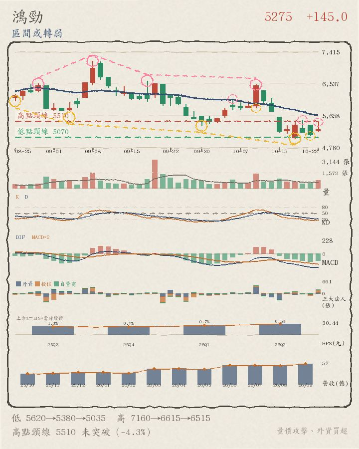
今天帶量收紅、跌破月線 5667.5，離高點頸線 5510 還差 4.3%，轉折還沒走出明顯方向。
- 月線位置：收盤 5275 在月線 5667.5 之下；5 日線 5259 也在月線之下（短均在下）；月線走平或向下、5 日線走平或向下
- 量能：成交量是 20 日均量的 1.11 倍，比 20 日均量大一些；收紅又量增，量價配合
- 關鍵價位：高點頸線 5510 還沒突破，差 4.3%；最近轉折高點 6515（低於 19.0%）；最近轉折低點 5035（高於 4.8%）
- 轉折結構：低點 5620、5380、5035 與高點 7160、6615、6515 都沒有明顯遞增，屬於區間震盪或轉弱；還沒確認的轉折低點 10-12 5870、10-21 5105；還沒確認的轉折高點 10-20 5540、10-22 5480（圖上虛線小圈）
高點墊高、底部不穩 成交金額 45.38 億・全榜第 52 名（上市第 42 名）
好條件 1/7：頭頭高
不好條件 4/5：在月線之下、月線下彎、今日下跌、外資賣超
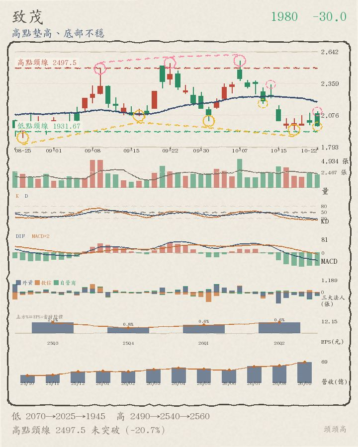
今天收黑、成交量也比平均少、跌破月線 2194.5，離高點頸線 2497.5 還差 20.7%，高點還在墊高（但底部沒同步墊高）。
- 月線位置：收盤 1980 在月線 2194.5 之下；5 日線 1999 也在月線之下（短均在下）；月線走平或向下、5 日線走平或向下
- 量能：成交量是 20 日均量的 0.85 倍，比 20 日均量少一些
- 關鍵價位：高點頸線 2497.5 還沒突破，差 20.7%；最近轉折高點 2560（低於 22.7%）；最近轉折低點 1945（高於 1.8%）
- 轉折結構：高點 2490、2540、2560 墊高 2.8%（頭頭高），但低點 2070、2025、1945 沒有同步墊高；還沒確認的轉折低點 10-13 2180、10-22 1975；還沒確認的轉折高點 10-14 2350、10-22 2110（圖上虛線小圈）
區間或轉弱 成交金額 44.15 億・全榜第 53 名（上市第 43 名）
好條件 1/7：外資買超
不好條件 4/5：在月線之下、月線下彎、相對大盤弱、今日下跌
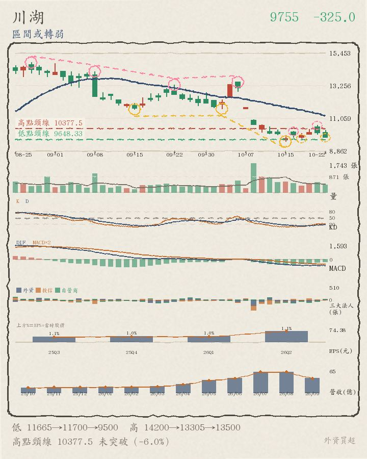
今天收黑、成交量也比平均少、跌破月線 11229.8，離高點頸線 10377.5 還差 6.0%，轉折還沒走出明顯方向。
- 月線位置：收盤 9755 在月線 11229.8 之下；5 日線 9962 也在月線之下（短均在下）；月線走平或向下、5 日線走平或向下
- 量能：成交量是 20 日均量的 0.79 倍，比 20 日均量少很多
- 關鍵價位：高點頸線 10377.5 還沒突破，差 6.0%；最近轉折高點 13500（低於 27.7%）；最近轉折低點 9500（高於 2.7%）
- 轉折結構：低點 11665、11700、9500 與高點 14200、13305、13500 都沒有明顯遞增，屬於區間震盪或轉弱；還沒確認的轉折低點 10-19 9690、10-22 9755；還沒確認的轉折高點 10-16 10175、10-21 10580（圖上虛線小圈）
區間或轉弱 成交金額 42.49 億・全榜第 54 名（上市第 44 名）
好條件 1/7：月線向上
不好條件 4/5：在月線之下、相對大盤弱、今日下跌、外資賣超
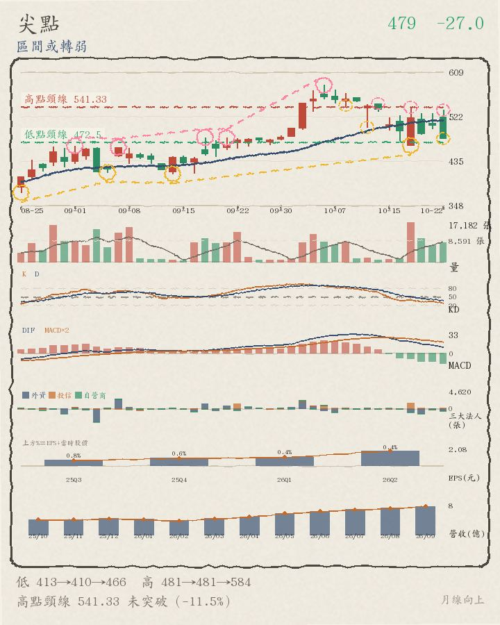
今天帶量收黑、跌破月線 515.107，離高點頸線 541.33 還差 11.5%，轉折還沒走出明顯方向。
- 月線位置：收盤 479 在月線 515.107 之下；5 日線 497.6 也在月線之下（短均在下）；月線向上、5 日線走平或向下
- 量能：成交量是 20 日均量的 1.49 倍，比 20 日均量大不少；收黑卻量增，量價背離
- 關鍵價位：高點頸線 541.33 還沒突破，差 11.5%；最近轉折高點 584（低於 18.0%）；最近轉折低點 466（高於 2.8%）
- 轉折結構：低點 413、410.5、466 與高點 481、481、584 都沒有明顯遞增，屬於區間震盪或轉弱；還沒確認的轉折低點 10-13 501、10-22 479；還沒確認的轉折高點 10-19 541、10-22 535（圖上虛線小圈）
高點墊高、底部不穩 成交金額 40.1 億・全榜第 56 名（上市第 45 名）
好條件 1/7：頭頭高
不好條件 5/5：在月線之下、月線下彎、相對大盤弱、今日下跌、外資賣超
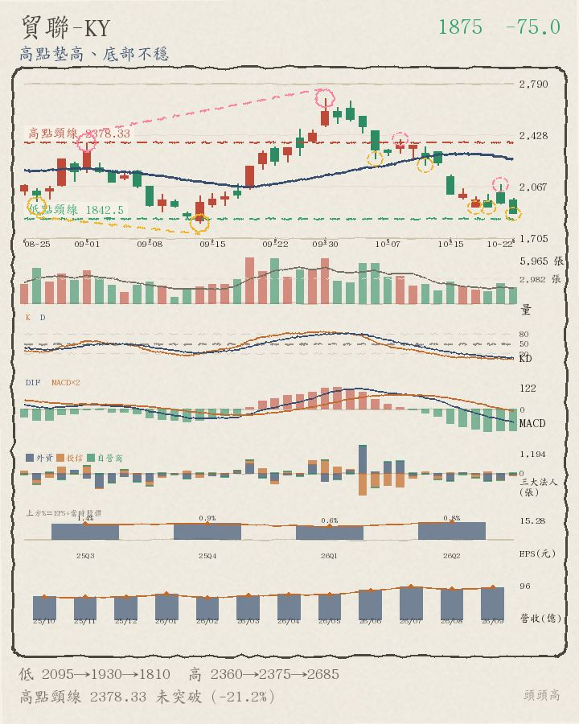
今天收黑、成交量也比平均少、跌破月線 2257.5，離高點頸線 2378.33 還差 21.2%，高點還在墊高（但底部沒同步墊高）。
- 月線位置：收盤 1875 在月線 2257.5 之下；5 日線 1948 也在月線之下（短均在下）；月線走平或向下、5 日線走平或向下
- 量能：成交量是 20 日均量的 0.61 倍，比 20 日均量少很多
- 關鍵價位：高點頸線 2378.33 還沒突破，差 21.2%；最近轉折高點 2685（低於 30.2%）；最近轉折低點 1810（高於 3.6%）
- 轉折結構：高點 2360、2375、2685 墊高 13.8%（頭頭高），但低點 2095、1930、1810 沒有同步墊高；還沒確認的轉折低點 10-20 1920、10-22 1875；還沒確認的轉折高點 10-08 2400、10-21 2080（圖上虛線小圈）
底部墊高、未過前高 成交金額 39.33 億・全榜第 57 名（上市第 46 名）
好條件 4/7：站上月線、月線向上、底底高、外資買超
不好條件 2/5：相對大盤弱、今日下跌
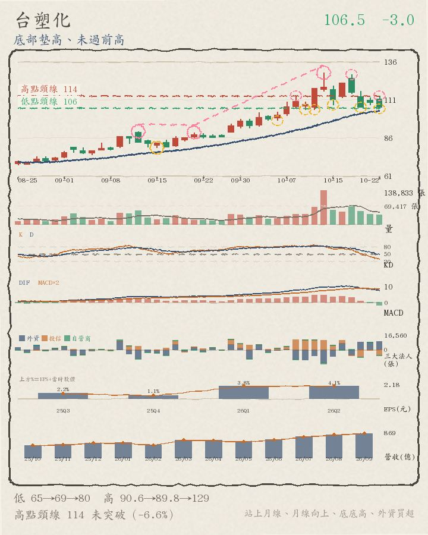
今天收黑、成交量也比平均少、站上月線 104.23，離高點頸線 114 還差 6.6%，底部還在墊高（但高點沒同步創高）。
- 月線位置：收盤 106.5 在月線 104.23 之上；5 日線 112.2 也在月線之上（短均在上）；月線向上、5 日線走平或向下
- 量能：成交量是 20 日均量的 0.88 倍，比 20 日均量少一些
- 關鍵價位：高點頸線 114 還沒突破，差 6.6%；最近轉折高點 129（低於 17.4%）；最近轉折低點 80（高於 33.1%）
- 轉折結構：低點 65.4、68.6、80 墊高 22.3%（底底高），但高點 90.6、89.8、129 沒有同步創高；還沒確認的轉折低點 10-20 106.5、10-22 105.5；還沒確認的轉折高點 10-19 128、10-22 114（圖上虛線小圈）
上升趨勢（底底高＋頭頭高） 成交金額 38.71 億・全榜第 58 名（上市第 47 名）
好條件 4/7：站上月線、月線向上、底底高、頭頭高
不好條件 3/5：相對大盤弱、今日下跌、外資賣超
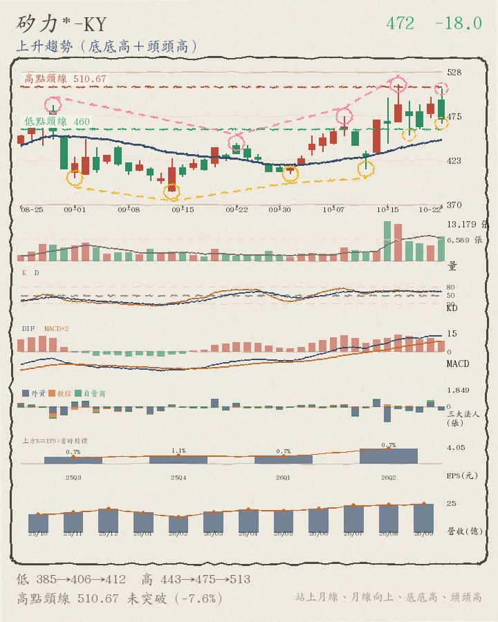
今天帶量收黑、站上月線 447.15，離高點頸線 510.67 還差 7.6%，轉折結構仍是底底高＋頭頭高。
- 月線位置：收盤 472 在月線 447.15 之上；5 日線 477.8 也在月線之上（短均在上）；月線向上、5 日線向上
- 量能：成交量是 20 日均量的 2.05 倍，比 20 日均量大不少；收黑卻量增，量價背離
- 關鍵價位：高點頸線 510.67 還沒突破，差 7.6%；最近轉折高點 513（低於 8.0%）；最近轉折低點 412（高於 14.6%）
- 轉折結構：低點 385、406.5、412 一路墊高 7.0%、高點 443、475、513 也一路墊高 15.8%，是底底高＋頭頭高；還沒確認的轉折低點 10-19 453、10-22 467；還沒確認的轉折高點 10-22 508（圖上虛線小圈）
底部墊高、突破前高 成交金額 36.42 億・全榜第 61 名（上市第 48 名）
好條件 4/7：站上月線、月線向上、底底高、頭頭高
不好條件 3/5：相對大盤弱、今日下跌、外資賣超
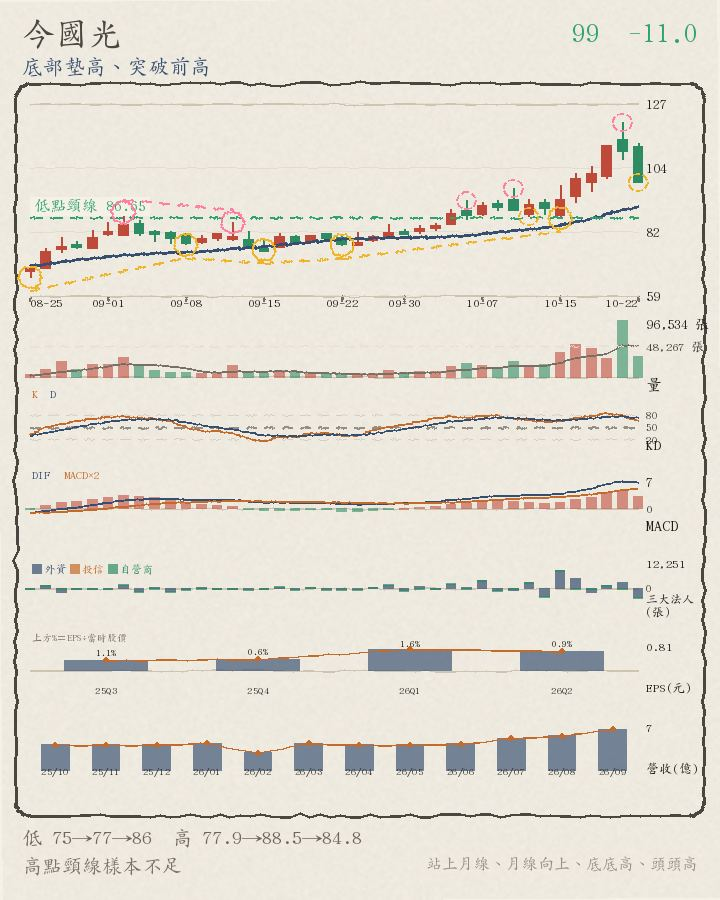
今天帶量收黑、站上月線 90.375，轉折結構仍是底底高＋頭頭高。
- 月線位置：收盤 99 在月線 90.375 之上；5 日線 104.7 也在月線之上（短均在上）；月線向上、5 日線向上
- 量能：成交量是 20 日均量的 1.50 倍，比 20 日均量大不少；收黑卻量增，量價背離
- 關鍵價位：最近轉折高點 84.8（高於 16.7%）；最近轉折低點 86.4（高於 14.6%）
- 轉折結構：低點 75.3、76.9、86.4 一路墊高 14.7%、高點 77.9、88.5、84.8 也一路墊高 41.5%，是底底高＋頭頭高；還沒確認的轉折低點 10-13 86.9、10-22 99；還沒確認的轉折高點 10-12 96.8、10-21 120（圖上虛線小圈）
高點墊高、底部不穩 成交金額 35.2 億・全榜第 62 名（上市第 49 名）
好條件 3/7：站上月線、月線向上、頭頭高
不好條件 3/5：相對大盤弱、今日下跌、外資賣超
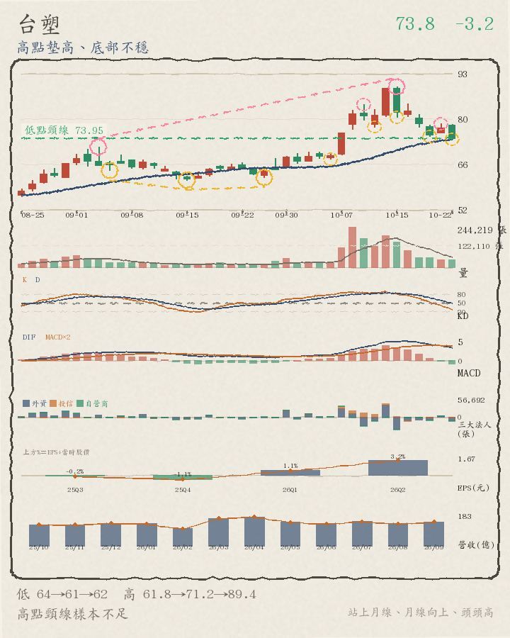
今天收黑、成交量也比平均少、站上月線 73.58，高點還在墊高（但底部沒同步墊高）。
- 月線位置：收盤 73.8 在月線 73.58 之上；5 日線 77.2 也在月線之上（短均在上）；月線向上、5 日線走平或向下
- 量能：成交量是 20 日均量的 0.62 倍，比 20 日均量少很多
- 關鍵價位：最近轉折高點 89.4（低於 17.4%）；最近轉折低點 62（高於 19.0%）
- 轉折結構：高點 61.8、71.2、89.4 墊高 44.7%（頭頭高），但低點 64.1、61.2、62 沒有同步墊高；還沒確認的轉折低點 10-20 74.4、10-22 73.5；還沒確認的轉折高點 10-12 84、10-21 78.2（圖上虛線小圈）
高點墊高、底部不穩 成交金額 34.49 億・全榜第 63 名（上市第 50 名）
好條件 1/7：頭頭高
不好條件 5/5：在月線之下、月線下彎、相對大盤弱、今日下跌、外資賣超
今天收黑、成交量也比平均少、跌破月線 286.825，跌破前一個轉折低點（高點頸線 299.5 還在收盤上方），高點還在墊高（但底部沒同步墊高）。
- 月線位置：收盤 248 在月線 286.825 之下；5 日線 261.4 也在月線之下（短均在下）；月線走平或向下、5 日線走平或向下
- 量能：成交量是 20 日均量的 0.92 倍，比 20 日均量少一些
- 關鍵價位：高點頸線 299.5 還沒突破、還在收盤上方 17.2%；最近轉折高點 316（低於 21.5%）；最近轉折低點 279.5（低於 11.3%）
- 轉折結構：高點 290.5、302、316 墊高 8.8%（頭頭高），但低點 272.5、262、279.5 沒有同步墊高；還沒確認的轉折低點 10-20 255、10-22 248；還沒確認的轉折高點 10-14 306、10-22 269.5（圖上虛線小圈）
高點墊高、底部不穩 成交金額 273.36 億・全榜第 5 名（上櫃第 1 名）
好條件 3/7：月線向上、頭頭高、外資買超
不好條件 3/5：在月線之下、相對大盤弱、今日下跌
今天帶量收黑、跌破月線 1600.75，離高點頸線 1445 還差 1.7%，高點還在墊高（但底部沒同步墊高）。
- 月線位置：收盤 1420 在月線 1600.75 之下；5 日線 1543 也在月線之下（短均在下）；月線向上、5 日線走平或向下
- 量能：成交量是 20 日均量的 1.87 倍，比 20 日均量大不少；收黑卻量增，量價背離
- 關鍵價位：高點頸線 1445 還沒突破，差 1.7%；最近轉折高點 1835（低於 22.6%）；最近轉折低點 1275（高於 11.4%）
- 轉折結構：高點 1430、1460、1835 墊高 28.3%（頭頭高），但低點 1395、1295、1275 沒有同步墊高；還沒確認的轉折低點 10-19 1500、10-22 1410；還沒確認的轉折高點 10-14 1745、10-20 1650（圖上虛線小圈）
底部墊高、突破前高 成交金額 219.4 億・全榜第 11 名（上櫃第 2 名）
好條件 5/7：站上月線、月線向上、底底高、頭頭高、突破頸線
不好條件 3/5：相對大盤弱、今日下跌、外資賣超
今天帶量收黑、站上月線 130.425，已站上高點頸線 138.33，轉折結構仍是底底高＋頭頭高。
- 月線位置：收盤 139 在月線 130.425 之上；5 日線 146.8 也在月線之上（短均在上）；月線向上、5 日線向上
- 量能：成交量是 20 日均量的 1.85 倍，比 20 日均量大不少；收黑卻量增，量價背離
- 關鍵價位：高點頸線 138.33 已站上；最近轉折高點 129.5（高於 7.3%）；最近轉折低點 124（高於 12.1%）
- 轉折結構：低點 111、113、124 一路墊高 11.7%、高點 89.4284、135、129.5 也一路墊高 24.7%，是底底高＋頭頭高；還沒確認的轉折低點 10-15 125、10-22 137；還沒確認的轉折高點 10-14 140.5、10-20 161.5（圖上虛線小圈）
區間或轉弱 成交金額 121.79 億・全榜第 17 名（上櫃第 3 名）
好條件 3/7：月線向上、突破頸線、外資買超
不好條件 3/5：在月線之下、相對大盤弱、今日下跌
今天收黑、跌破月線 534.55，已站上高點頸線 485，轉折還沒走出明顯方向。
- 月線位置：收盤 486 在月線 534.55 之下；5 日線 491.2 也在月線之下（短均在下）；月線向上、5 日線走平或向下
- 量能：成交量是 20 日均量的 1.04 倍，跟 20 日均量差不多
- 關鍵價位：高點頸線 485 已站上；最近轉折高點 630（低於 22.9%）；最近轉折低點 454（高於 7.0%）
- 轉折結構：低點 420、482、454 與高點 492、478、630 都沒有明顯遞增，屬於區間震盪或轉弱；還沒確認的轉折低點 10-13 522、10-22 482；還沒確認的轉折高點 10-14 570、10-22 526（圖上虛線小圈）
區間或轉弱 成交金額 98.45 億・全榜第 27 名（上櫃第 4 名）
好條件 2/7：月線向上、外資買超
不好條件 2/5：在月線之下、今日下跌
今天帶量收黑、跌破月線 467.65，離高點頸線 499.25 還差 7.2%，轉折還沒走出明顯方向。
- 月線位置：收盤 463.5 在月線 467.65 之下；5 日線 446.7 也在月線之下（短均在下）；月線向上、5 日線走平或向下
- 量能：成交量是 20 日均量的 2.10 倍，比 20 日均量大不少；收黑卻量增，量價背離
- 關鍵價位：高點頸線 499.25 還沒突破，差 7.2%；最近轉折高點 530（低於 12.5%）；最近轉折低點 399（高於 16.2%）
- 轉折結構：低點 407、436.5、399 與高點 496、487、530 都沒有明顯遞增，屬於區間震盪或轉弱；還沒確認的轉折低點 10-07 475.5、10-13 444；還沒確認的轉折高點 10-14 508、10-22 506（圖上虛線小圈）
高點墊高、底部不穩 成交金額 82.42 億・全榜第 34 名（上櫃第 5 名）
好條件 1/7：頭頭高
不好條件 5/5：在月線之下、月線下彎、相對大盤弱、今日下跌、外資賣超
今天帶量收黑、跌破月線 2751.5，跌破前一個轉折低點（高點頸線 2931.67 還在收盤上方），高點還在墊高（但底部沒同步墊高）。
- 月線位置：收盤 2375 在月線 2751.5 之下；5 日線 2521 也在月線之下（短均在下）；月線走平或向下、5 日線走平或向下
- 量能：成交量是 20 日均量的 1.21 倍，比 20 日均量大不少；收黑卻量增，量價背離
- 關鍵價位：高點頸線 2931.67 還沒突破、還在收盤上方 19.0%；最近轉折高點 3210（低於 26.0%）；最近轉折低點 2585（低於 8.1%）
- 轉折結構：高點 2930、2950、3210 墊高 9.6%（頭頭高），但低點 1450、2650、2585 沒有同步墊高；還沒確認的轉折低點 10-19 2385、10-22 2365；還沒確認的轉折高點 10-14 2915、10-21 2640（圖上虛線小圈）
區間或轉弱 成交金額 79.86 億・全榜第 36 名（上櫃第 6 名）
好條件 0/7：無
不好條件 5/5：在月線之下、月線下彎、相對大盤弱、今日下跌、外資賣超
今天收黑、成交量也比平均少、跌破月線 1013.05，跌破前一個轉折低點（高點頸線 1018.75 還在收盤上方），轉折還沒走出明顯方向。
- 月線位置：收盤 826 在月線 1013.05 之下；5 日線 866.8 也在月線之下（短均在下）；月線走平或向下、5 日線走平或向下
- 量能：成交量是 20 日均量的 0.73 倍，比 20 日均量少很多
- 關鍵價位：高點頸線 1018.75 還沒突破、還在收盤上方 18.9%；最近轉折高點 1260（低於 34.4%）；最近轉折低點 872（低於 5.3%）
- 轉折結構：低點 931、875、872 與高點 1015、1010、1260 都沒有明顯遞增，屬於區間震盪或轉弱；還沒確認的轉折低點 10-19 838、10-22 815；還沒確認的轉折高點 10-21 903（圖上虛線小圈）
底部墊高、未過前高 成交金額 75.63 億・全榜第 38 名（上櫃第 7 名）
好條件 1/7：底底高
不好條件 5/5：在月線之下、月線下彎、相對大盤弱、今日下跌、外資賣超
今天帶量收黑、跌破月線 502.3，跌破前一個轉折低點（高點頸線 571 還在收盤上方），底部還在墊高（但高點沒同步創高）。
- 月線位置：收盤 438.5 在月線 502.3 之下；5 日線 469.2 也在月線之下（短均在下）；月線走平或向下、5 日線走平或向下
- 量能：成交量是 20 日均量的 1.48 倍，比 20 日均量大不少；收黑卻量增，量價背離
- 關鍵價位：高點頸線 571 還沒突破、還在收盤上方 23.2%；最近轉折高點 578（低於 24.1%）；最近轉折低點 477（低於 8.1%）
- 轉折結構：低點 399、469.5、477 墊高 19.5%（底底高），但高點 564、535、578 沒有同步創高；還沒確認的轉折低點 10-19 447.5、10-22 436.5；還沒確認的轉折高點 10-20 510（圖上虛線小圈）
剛突破前高 成交金額 69.28 億・全榜第 43 名（上櫃第 8 名）
好條件 3/7：頭頭高、外資買超、量價攻擊（收紅＋大量）
不好條件 2/5：在月線之下、月線下彎
今天帶量收紅、跌破月線 303.696，跌破前一個轉折低點（高點頸線 303.17 還在收盤上方），高點還在墊高（但底部沒同步墊高）。
- 月線位置：收盤 293.5 在月線 303.696 之下；5 日線 282.126 也在月線之下（短均在下）；月線走平或向下、5 日線走平或向下
- 量能：成交量是 20 日均量的 1.91 倍，比 20 日均量大不少；收紅又量增，量價配合
- 關鍵價位：高點頸線 303.17 還沒突破、還在收盤上方 3.2%；最近轉折高點 302.128（低於 2.9%）；最近轉折低點 302.128（低於 2.9%）
- 轉折結構：高點 302.128、302.128、302.128 墊高 3.4%（頭頭高），但低點 302.128、302.128、302.128 沒有同步墊高；還沒確認的轉折低點 10-15 302.128、10-20 248；還沒確認的轉折高點 10-20 298、10-22 312.5（圖上虛線小圈）
高點墊高、底部不穩 成交金額 67.34 億・全榜第 45 名（上櫃第 9 名）
好條件 2/7：頭頭高、外資買超
不好條件 3/5：在月線之下、月線下彎、今日下跌
今天帶量收黑、跌破月線 1503.5，離高點頸線 1510 還差 9.9%，高點還在墊高（但底部沒同步墊高）。
- 月線位置：收盤 1360 在月線 1503.5 之下；5 日線 1387 也在月線之下（短均在下）；月線走平或向下、5 日線走平或向下
- 量能：成交量是 20 日均量的 1.37 倍，比 20 日均量大不少；收黑卻量增，量價背離
- 關鍵價位：高點頸線 1510 還沒突破，差 9.9%；最近轉折高點 1750（低於 22.3%）；最近轉折低點 1320（高於 3.0%）
- 轉折結構：高點 1080、1505、1750 墊高 62.0%（頭頭高），但低點 1480、1395、1320 沒有同步墊高；還沒確認的轉折低點 10-22 1335；還沒確認的轉折高點 10-08 1570、10-21 1515（圖上虛線小圈）
高點墊高、底部不穩 成交金額 57.84 億・全榜第 49 名（上櫃第 10 名）
好條件 2/7：月線向上、頭頭高
不好條件 4/5：在月線之下、相對大盤弱、今日下跌、外資賣超
今天帶量收黑、跌破月線 255.275，離高點頸線 286.83 還差 14.1%，高點還在墊高（但底部沒同步墊高）。
- 月線位置：收盤 246.5 在月線 255.275 之下；5 日線 255 也在月線之下（短均在下）；月線向上、5 日線走平或向下
- 量能：成交量是 20 日均量的 1.15 倍，比 20 日均量大不少；收黑卻量增，量價背離
- 關鍵價位：高點頸線 286.83 還沒突破，差 14.1%；最近轉折高點 291.5（低於 15.4%）；最近轉折低點 241.5（高於 2.1%）
- 轉折結構：高點 251.5、289.5、291.5 墊高 15.9%（頭頭高），但低點 238、238、241.5 沒有同步墊高；還沒確認的轉折低點 10-08 243、10-22 245；還沒確認的轉折高點 10-12 277、10-22 279.5（圖上虛線小圈）
底部墊高、未過前高 成交金額 40.18 億・全榜第 55 名（上櫃第 11 名）
好條件 5/7：站上月線、月線向上、底底高、突破頸線、外資買超
不好條件 2/5：相對大盤弱、今日下跌
今天帶量收黑、站上月線 129.35，已站上高點頸線 116.09，底部還在墊高（但高點沒同步創高）。
- 月線位置：收盤 135.5 在月線 129.35 之上；5 日線 138.8 也在月線之上（短均在上）；月線向上、5 日線走平或向下
- 量能：成交量是 20 日均量的 2.11 倍，比 20 日均量大不少；收黑卻量增，量價背離
- 關鍵價位：高點頸線 116.09 已站上；最近轉折高點 166（低於 18.4%）；最近轉折低點 110（高於 23.2%）
- 轉折結構：低點 100、107.5、110 墊高 10.0%（底底高），但高點 123.5、117.177、166 沒有同步創高；還沒確認的轉折低點 10-20 129、10-22 134.5；還沒確認的轉折高點 10-22 154.5（圖上虛線小圈）
區間或轉弱 成交金額 38.48 億・全榜第 59 名（上櫃第 12 名）
好條件 0/7：無
不好條件 5/5：在月線之下、月線下彎、相對大盤弱、今日下跌、外資賣超
今天收黑、成交量也比平均少、跌破月線 18008，離高點頸線 16810 還差 4.8%，轉折還沒走出明顯方向。
- 月線位置：收盤 16010 在月線 18008 之下；5 日線 16177 也在月線之下（短均在下）；月線走平或向下、5 日線走平或向下
- 量能：成交量是 20 日均量的 0.92 倍，比 20 日均量少一些
- 關鍵價位：高點頸線 16810 還沒突破，差 4.8%；最近轉折高點 18465（低於 13.3%）；最近轉折低點 15500（高於 3.3%）
- 轉折結構：低點 17170、15975、15500 與高點 21800、19895、18465 都沒有明顯遞增，屬於區間震盪或轉弱；還沒確認的轉折低點 10-15 15750、10-22 15800；還沒確認的轉折高點 10-16 16620、10-22 17000（圖上虛線小圈）
區間或轉弱 成交金額 37.04 億・全榜第 60 名（上櫃第 13 名）
好條件 0/7：無
不好條件 5/5：在月線之下、月線下彎、相對大盤弱、今日下跌、外資賣超
今天收黑、成交量也比平均少、跌破月線 5390.75，跌破前一個轉折低點（高點頸線 5270 還在收盤上方），轉折還沒走出明顯方向。
- 月線位置：收盤 4890 在月線 5390.75 之下；5 日線 5047 也在月線之下（短均在下）；月線走平或向下、5 日線走平或向下
- 量能：成交量是 20 日均量的 0.82 倍，比 20 日均量少很多
- 關鍵價位：高點頸線 5270 還沒突破、還在收盤上方 7.2%；最近轉折高點 6160（低於 20.6%）；最近轉折低點 4995（低於 2.1%）
- 轉折結構：低點 5365、5090、4995 與高點 6060、5860、6160 都沒有明顯遞增，屬於區間震盪或轉弱；還沒確認的轉折低點 10-20 4865、10-22 4850；還沒確認的轉折高點 10-20 5370、10-22 5170（圖上虛線小圈）
區間或轉弱 成交金額 33.86 億・全榜第 64 名（上櫃第 14 名）
好條件 1/7：外資買超
不好條件 4/5：在月線之下、月線下彎、相對大盤弱、今日下跌
今天收黑、成交量也比平均少、跌破月線 2025.5，離高點頸線 1946.67 還差 3.4%，轉折還沒走出明顯方向。
- 月線位置：收盤 1880 在月線 2025.5 之下；5 日線 1878 也在月線之下（短均在下）；月線走平或向下、5 日線走平或向下
- 量能：成交量是 20 日均量的 0.65 倍，比 20 日均量少很多
- 關鍵價位：高點頸線 1946.67 還沒突破，差 3.4%；最近轉折高點 2350（低於 20.0%）；最近轉折低點 1785（高於 5.3%）
- 轉折結構：低點 1900、2080、1785 與高點 2195、2160、2350 都沒有明顯遞增，屬於區間震盪或轉弱；還沒確認的轉折低點 10-15 1800、10-22 1870；還沒確認的轉折高點 10-21 1945、10-22 1945（圖上虛線小圈）
剛突破前高 成交金額 33.73 億・全榜第 65 名（上櫃第 15 名）
好條件 4/7：站上月線、月線向上、頭頭高、外資買超
不好條件 2/5：相對大盤弱、今日下跌
今天帶量收黑、站上月線 193.975，離高點頸線 214.5 還差 8.6%，高點還在墊高（但底部沒同步墊高）。
- 月線位置：收盤 196 在月線 193.975 之上；5 日線 209 也在月線之上（短均在上）；月線向上、5 日線向上
- 量能：成交量是 20 日均量的 2.37 倍，比 20 日均量大不少；收黑卻量增，量價背離
- 關鍵價位：高點頸線 214.5 還沒突破，差 8.6%；最近轉折高點 215（低於 8.8%）；最近轉折低點 184（高於 6.5%）
- 轉折結構：高點 203.5、195、215 墊高 13.7%（頭頭高），但低點 176、168、184 沒有同步墊高；還沒確認的轉折低點 10-15 189、10-22 195.5；還沒確認的轉折高點 10-14 213.5、10-21 244.5（圖上虛線小圈）
區間或轉弱 成交金額 33.3 億・全榜第 66 名（上櫃第 16 名）
好條件 1/7：外資買超
不好條件 4/5：在月線之下、月線下彎、相對大盤弱、今日下跌
今天收黑、成交量也比平均少、跌破月線 216.725，離高點頸線 235.5 還差 13.8%，轉折還沒走出明顯方向。
- 月線位置：收盤 203 在月線 216.725 之下；5 日線 206.9 也在月線之下（短均在下）；月線走平或向下、5 日線走平或向下
- 量能：成交量是 20 日均量的 0.48 倍，比 20 日均量少很多
- 關鍵價位：高點頸線 235.5 還沒突破，差 13.8%；最近轉折高點 238（低於 14.7%）；最近轉折低點 194.5（高於 4.4%）
- 轉折結構：低點 208、211、194.5 與高點 233、238、238 都沒有明顯遞增，屬於區間震盪或轉弱；還沒確認的轉折低點 10-13 216.5、10-22 202.5；還沒確認的轉折高點 10-14 233、10-21 217（圖上虛線小圈）
底部墊高、未過前高 成交金額 30.19 億・全榜第 67 名（上櫃第 17 名）
好條件 2/7：月線向上、底底高
不好條件 4/5：在月線之下、相對大盤弱、今日下跌、外資賣超
今天收黑、成交量也比平均少、跌破月線 147.875，離高點頸線 180.25 還差 25.1%，底部還在墊高（但高點沒同步創高）。
- 月線位置：收盤 135 在月線 147.875 之下；5 日線 141.8 也在月線之下（短均在下）；月線向上、5 日線走平或向下
- 量能：成交量是 20 日均量的 0.83 倍，比 20 日均量少很多
- 關鍵價位：高點頸線 180.25 還沒突破，差 25.1%；最近轉折高點 180.5（低於 25.2%）；最近轉折低點 115（高於 17.4%）
- 轉折結構：低點 81.8、84.8、115 墊高 40.6%（底底高），但高點 99.4、98.9、180.5 沒有同步創高；還沒確認的轉折低點 10-20 134、10-22 135；還沒確認的轉折高點 10-14 180、10-22 154（圖上虛線小圈）
上升趨勢（底底高＋頭頭高） 成交金額 28.36 億・全榜第 68 名（上櫃第 18 名）
好條件 5/7：月線向上、底底高、頭頭高、突破頸線、外資買超
不好條件 3/5：在月線之下、相對大盤弱、今日下跌
今天帶量收黑、跌破月線 222.6，已站上高點頸線 142.25，轉折結構仍是底底高＋頭頭高。
- 月線位置：收盤 217.5 在月線 222.6 之下；5 日線 241.7 也在月線之上（短均在上）；月線向上、5 日線向上
- 量能：成交量是 20 日均量的 1.51 倍，比 20 日均量大不少；收黑卻量增，量價背離
- 關鍵價位：高點頸線 142.25 已站上；最近轉折高點 280.5（低於 22.5%）；最近轉折低點 213.5（高於 1.9%）
- 轉折結構：低點 123.5、172.5、213.5 一路墊高 72.9%、高點 144、201、280.5 也一路墊高 94.8%，是底底高＋頭頭高；還沒確認的轉折低點 10-19 217、10-22 217.5；還沒確認的轉折高點 10-12 250.5、10-21 293.5（圖上虛線小圈）
區間或轉弱 成交金額 25.24 億・全榜第 69 名（上櫃第 19 名）
好條件 2/7：月線向上、外資買超
不好條件 3/5：在月線之下、相對大盤弱、今日下跌
今天收黑、成交量也比平均少、跌破月線 1394，離高點頸線 1440 還差 12.5%，轉折還沒走出明顯方向。
- 月線位置：收盤 1260 在月線 1394 之下；5 日線 1345 也在月線之下（短均在下）；月線向上、5 日線走平或向下
- 量能：成交量是 20 日均量的 0.69 倍，比 20 日均量少很多
- 關鍵價位：高點頸線 1440 還沒突破，差 12.5%；最近轉折高點 1680（低於 25.0%）；最近轉折低點 1180（高於 6.8%）
- 轉折結構：低點 1185、1180、1180 與高點 1435、1270、1680 都沒有明顯遞增，屬於區間震盪或轉弱；還沒確認的轉折低點 10-20 1310、10-22 1260；還沒確認的轉折高點 10-06 1590、10-20 1430（圖上虛線小圈）
高點墊高、底部不穩 成交金額 24.85 億・全榜第 70 名（上櫃第 20 名）
好條件 2/7：月線向上、頭頭高
不好條件 4/5：在月線之下、相對大盤弱、今日下跌、外資賣超
今天收黑、成交量也比平均少、跌破月線 203.1，離高點頸線 204.17 還差 8.9%，高點還在墊高（但底部沒同步墊高）。
- 月線位置：收盤 186 在月線 203.1 之下；5 日線 194 也在月線之下（短均在下）；月線向上、5 日線走平或向下
- 量能：成交量是 20 日均量的 0.62 倍，比 20 日均量少很多
- 關鍵價位：高點頸線 204.17 還沒突破，差 8.9%；最近轉折高點 229.5（低於 19.0%）；最近轉折低點 181.5（高於 2.5%）
- 轉折結構：高點 187.5、202、229.5 墊高 22.4%（頭頭高），但低點 173、170、181.5 沒有同步墊高；還沒確認的轉折低點 10-19 188、10-22 185.5；還沒確認的轉折高點 10-14 209.5、10-22 201（圖上虛線小圈）